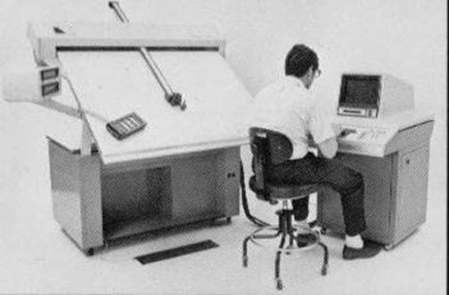
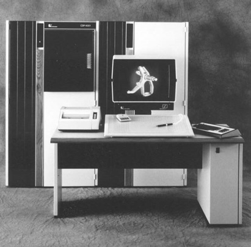

第12章：Computervision
根据1994年《华尔街日报》的一篇文章，菲利普·维勒斯决定在听完马丁·路德·金被谋杀后几天康科德市第一教区教堂的部长颂扬他的成就后创办一家科技公司。维勒斯觉得他需要用自己的生命做一些有意义的事情，有两个选择-成为社会活动家或者创办一家公司，赚很多钱，然后用那些钱来改变世界。幸运的是，最终成为计算机辅助设计/计算机辅助制造(CAD/CAM)行业的发展，他选择了第二条道路。
维勒斯在技术上有资格创办计算机视觉公司或CV，这是它通常被称呼的。他出生于法国巴黎，经过加拿大来到这个国家逃避纳粹。维勒斯拥有哈佛大学的文科学士学位和麻省理工学院的机械工程硕士学位。他在通用电气的管理培训计划中工作了几年，随后在Perkin Elmer、Barnes Engineering和Singer-General Precision的Link部门工作，负责越来越多的项目管理工作。在他决定成立计算机视觉公司时，维勒斯是波士顿的康科德控制公司的高级产品经理。
在决定成立计算机视觉时，维勒斯花费了很多业余时间与一组商业和技术伙伴包括史蒂夫·库恩斯和麻省理工学院媒体实验室的创始人尼古拉斯·内格罗蓬特会面。维勒斯意识到，要建立成功的公司，需要更多的商业经验，因此决定找到一个更有商业经验的合作伙伴来帮助启动企业。马丁·艾伦是这个角色的自然选择，他曾经是维勒斯在Link的上司。艾伦是加利福尼亚大学的机械工程师，之前曾在TRW、马丁玛丽特和辛格-通用精密工作过。计划是艾伦担任公司总裁，而维勒斯则担任高级副总裁。
在1969年初，公司正在获得最初的外部融资时，维勒斯担任了公司的总裁。当时，Computervision由维勒斯的朋友和亲戚提供资金支持。最终，该公司能够从一个名为Targa Fund的小型纽约风险投资基金、Paine Webber Jackson and Curtis以及Diebold Group筹集约100万美元。此时，艾伦加入了公司担任总裁，而维勒斯则按照之前商定的升为高级副总裁。该公司的另一位早期风险投资支持者是Ampersand Ventures，该公司在1970年做出了重要的财务承诺。巧合的是，该公司还是Prime Computer在1972年的最初支持者之一。当时，他们并不知道这两家公司如何在1980年代末走向冲突。
在接下来的十年里，两位创始人之间的关系似乎是一种可行的安排。作为公司的高级副总裁，维勒斯是驱动Computervision产品开发战略的最重要人物。虽然艾伦一直留在公司任CEO或董事长直到1980年代后期，但维勒斯在1980年离开了公司，后来成立了第一家机器人和机器视觉公司Automatix，以及机械CAE公司Cognition。
CV早期产品战略
最初的Computervision产品战略涉及设计和生产多种硬件产品，以产生收入，同时公司创建了CADDS（计算机辅助设计和绘图系统）软件的最初版本。三名人员被招募负责硬件开发：David Friedman负责Interact终端，Joe Sliwkowski负责Compucircuit光绘制机，Ken Levy负责Autolign半导体掩模对准器。首次雇用的两名程序员Robert Blauth和Bert Bruce负责开发CADDS软件。Blauth最终负责公司的所有研究和开发工作。
维勒的技术特长是设计高精度机电设备。在1969年这个时间段，电子工业进入了由新集成电路技术驱动的首次显著增长浪潮。半导体行业面临的主要问题之一是生产用于制造硅晶圆的掩模，每个掩模都包含多个正在制造的电路的复制品。使用一种称为“光刻术”的技术，集成电路由多层材料组成，每层都需要一个或多个掩模，必须精确对齐。
尽管今天的12英寸晶圆本身可能包含数百甚至数千个独立电路而不是1969年的4英寸晶圆，最多可能包含几十个电路。但四十年前可用的技术比今天的粗糙得多，需要能够快速准确地对齐单个电路艺术品以制作掩模套件的设备。当时可用的手动方法是缓慢且容易出错的。当时，此项工作的精度必须达到一微米，并且操作员要使用高功率显微镜来对齐掩模。
维勒为半导体行业设计了Autolign自动掩模对准器，预计它将成为公司的“生力军”产品，直到其工程设计和制图产品准备好上市为止。在该公司初始的几年中，情况证明确实如此，因为收入主要来自Autolign产品。Computervision通过购买由Kulicke＆Soffa提供的手动对准器并添加其自己的电子和驱动机构来生产Autolign产品。 Compucircuit则是由Computervision工程师从头开始设计的。在计算机系统出现之前，印刷电路板（PCB）是通过在薄膜上使用粘贴贴纸手工绘制电路导线和垫，或者使用安装在绘图机头上的锋利刀子在Rubylith剥皮材料上绘制的。通常，这些布局的大小是实际板的两倍或四倍。每个电路板层需要单独的艺术品纸张。然后，将这些电路布局按照适当的比例进行缩小并用于制造电路板。除了艺术品的规模和精度外，它与生产集成电路的方式非常相似。 Compucircuit直接在电影上绘制了印刷电路板布局，与生产所需的相同比例，消除了缩小步骤。它比用于制作PCB艺术品的早期工艺更快速、更准确。
第三款硬件产品INTERACT从一开始就被设计成公司CAD / CAM解决方案的关键要素。该设备是数字化仪和绘图仪的组合，也是公司唯一的交互式终端。维勒将其描述为“大型交互表面”，共享基于存储管的终端的电子器件。操作员可以复制手绘部件，将其显示在CRT屏幕上，进行编辑更改并绘制结果。第一部Interact于1970年运往Sperry Gyroscope。最终，该系统被退回给Computervision，在公司大厅展出了多年。Computervision声称该特定设备拥有28,000小时的运行时间，仅有3%的停机时间。各种版本的INTERACT生产到大约1980年左右。

最初的 Computervision 产品策略是在一个时间共享系统上运行软件以操作 Interact 终端。Compucircuit 照相绘图仪旨在使用远程计算机系统上生成的数据在线操作，或使用磁带存储的数据操作。然而，时间共享概念因当时可用的缓慢的 300 波特通信速度和计算机工具的不可靠而被证明是不切实际的。在公司成立一年左右，计划改变，Computervision 开始使用来自 Data General 的新型 Nova 16 位小型计算机。
快速起步
Computervision是70年代和80年代大部分时间里CAD行业的主导公司之一，在某些时期拥有35%至40%的市场份额。到1970年时，几个发展趋势结合在一起，使商业CAD系统业务成为可行之举。像Data General、Digital Equipment和Scientific Data Systems这样的公司推出的小型计算机价格合理，低成本的储存管显示终端可以商业使用，或者公司可以自行构建终端，从Tektronix获得储存管显示设备，以及CalComp和其他公司的数字绘图仪面世，许多关于二维和三维图像的基本软件概念已经在技术论文中发表。基本技术零件都已就绪。主要任务是开发可靠的软件，以满足用户群体对设计和绘图任务的需求。
该公司通过专注于最好描述为生产绘图的领域迅速起步。早期的系统特别适合绘图员的需求，例如公司的INTERACT工作站。虽然Allen和Villers都有机械工程背景，但早期的Computervision系统针对的是电子用户，特别是那些想要自动化印制电路板艺术品的公司。从技术上讲，在计算机上准备此艺术品的过程相对简单，特别是与随后涉及三维机械设计的活动相比。还需要制作各种非比例的原理图，以记录PCB的逻辑。
Computervision CADDS系统既是传统做法的彻底改变，但绘图员仍然可以识别的过程，特别是使用INTERACT工作站。 PCB艺术品生成和原理图文档通常涉及在PCB布局上放置大量重复的图形实体，例如集成电路的安装孔图案或原理图上晶体管的符号。即使是早期的CAD系统在处理重复符号方面也证明非常高效。当用于这些任务时，Computervision的CADDS系统非常有效。一旦使用计算机创建了PCB布局，就可以通过将信息输出到Compucircuit激光绘图仪来生成照片质量的副本。该设备通过暴露描述每种连接垫或线迹类型的光圈来在一张照片胶片上创建艺术品。然后可以像手动贴片艺术品拍摄的胶片一样，从该步骤开始使用该胶片。
大部分最初出售的200个电脑视觉系统被用于PCB艺术生成。 20世纪70年代初期，集成电路艺术生成在许多方面与PCB绘图类似。 IC艺术品通常在大的网格纸张上制作，其电路的不同层以不同的颜色显示。 然后使用这些绘图作为在一种叫做头皮层的材料上生成详细的大型艺术品母版的基础。 这个过程涉及到切割材料的顶层，然后仔细地将代表相应电路层的材料去除。 从那一点开始，该过程与PCB艺术品制作类似，其中这些纸张以照相减小的形式被用作生产母版，除了IC人士提到生成这个最终艺术品称为“面具制作” 之外。
20世纪70年代初，有两个趋势推动半导体公司自动化IC面具制作流程。 首先，集成电路变得更加复杂。 这是因特尔的戈登·尔(Gordon Moore)宣布集成电路密度每18个月翻一倍的时候——现在称为摩尔定律的趋势。 设计和生产人员可以看到，在电路日益复杂的时代，使用手工艺术创作程序将变得几乎不可能。 第二个问题可能更加重要。 面具制作流程正在从传统的照相减小技术转向使用由数字数据驱动的新设备。 公司必须产生电路布局的数字记录，以驱动这些机器。
计算机视觉公司将其CADDS系统的IC市场视为PCB电子市场的合理扩展，并将半导体面具制作能力添加到其软件中。 在20世纪70年代初，虽然计算机视觉主导了PCB艺术创作和原理图绘制市场，但Calma同样主导了IC市场。 在整个电子市场的两个领域中，这两家公司经常竞争，其中计算机视觉通常赢得更大的PCB业务，而Calma则如前所述赢得了大部分IC业务。 Autolign产品通常独立于公司的CADDS系统进行销售。
人员和组织
在 Computervision 的头十年中，Villers 负责了公司的大部分内部运营，特别是与产品开发相关的工作，而 Allen 则负责外部活动。他们通常会一起参与向潜在投资者的演示。尽管 Villers 负责最初的建立制造硬件和软件产品的公司的想法，但他似乎并没有遇到实际向 Allen 汇报的问题。这可能是因为 Villers 在 Link 工作时曾为 Allen 工作过。
多年来，Computervision 特别成功地招募了一支优秀的技术和商业管理团队，包括 Phil Reed 和 Ken Versprille。Villers 亲自参与了引进 Sam Geisberg 的工作，Sam 是一位杰出的俄罗斯数学家，后来在 1974 年加入 Computervision 并开始了 Parametric Technology Corporation。Sam 的兄弟 Vladimir 最初移民到以色列，但后来也搬到了美国并加入了 Computervision。
Computervision 在 1972 年 12 月首次上市，在 1979 年被列入纽约证券交易所，代号为 CVN。
Computervision 成为了一家计算机制造商
分析公司历史时，很少能找到一个事件或决策，声称它是企业未来的决定性转折点。 Computervision 决定建立自己的计算机系统可能是这样的事件。公司最初使用从 Data General 购买的 Nova 计算机。这些计算机比较便宜，但 Computervision 认为，通过建造自己的机器，可以提高利润率并生产更适合其客户需要的计算机。一家西海岸公司破解了 Data General Nova 计算机，并生产了一组芯片，使得像 Computervision 这样的公司可以以比它们向 Data General 支付的成本低得多的价格生产类似的机器。Villers 将此视为一种低风险的策略，而设计自己的计算机显然是正在考虑的选项。约在 1978 年，该公司开始制造一种称为 CGP-100 的计算机，其中 CGP 代表 Computervision Graphics Processor。这导致建造了几个大型制造设施，并安装了用于制造和测试这些机器的机器和设备。不用说，Data General 对此并不高兴，并试图通过提供有吸引力的商业条款来使 Computervision 考虑它正在研发的新机器。与今天的情况可能不同，似乎没有因侵犯知识产权而有任何诉讼。
CGP-100 是由一组计算机设计工程师设计的，他们被称为“计算机吉普赛人”，因为他们倾向于在波士顿地区的公司之间移动，同时设计小型计算机。他们显然做得很好，因为对于 Computervision 的程序员来说，很难区分 Data General Nova 和 CGP-100。这台新机器是一台 16 位小型计算机，其内存可扩展到 512K 单词。它支持 14 百万字的磁盘驱动器和其他标准外围设备，如磁带驱动器。如前所述，Computervision 终端使用 Tektronix 存储管显示器。一旦在 1970 年代中期出现 19 英寸版本，该公司迅速转向它们。这些终端使用 11 英寸 x 11 英寸的平板电视或大型独立数字化器进行用户交互，以及先前描述的 INTERACT 绘图数字化器。
在 1978 年，一个 512 单词内存的基本 CGP-100 系统售价 14 万美元，而交互式终端的售价为 4 万至 6.5 万美元。下述三维机械设计和绘图软件售价为 1 万美元，而数控软件则为另外 5,000 美元。根据这种定价结构，人们可以得出结论，在 1978 年，Computervision 主要是一家计算机设备制造公司，同时也出售 CAD 软件。
Cobilt拓展CV的制造业务
1971年，Computervision收购了一家名为Cobilt的集成电路掩模制造设备制造商。Cobilt成立于1970年，由Peter Wolken、Gerd Schlieman、Allan Fleming和Fred Schultz共同创立。这次收购旨在提高公司在快速增长的市场中的制造能力，同时使Computervision能够向半导体行业销售更全面的系统。最初，负责Computervision的Autolign产品的肯尼思·莱维被任命负责Cobilt部门。到1977年，由山姆·哈雷尔运营的该部门每年收入达到1820万美元，占公司总收入的近40%。
莱维于1975年离开了Cobilt，创立了KLA Instruments（今天的半导体生产设备制造商KLA-Tencor），直到1999年担任CEO，直到2006年担任董事长。 Wolken和Harrell最终都加入了KLA。
尽管收入增长迅速，但Cobilt从未特别赚钱，在1980年左右Computervision开始逐步出售Cobilt。最终，大部分Cobilt在1981年以1400万美元的价格被卖给了应用材料公司。Computervision被Cobilt的所有权所困扰，导致公司直到1984年才解决所有诉讼问题。该公司在那一年报告了1,000万美元的亏损，归因于把最后一批Cobilt索赔问题解决完毕。
制造光绘仪和半导体掩模制作设备是重要的，但它与建造自己的计算机的核心业务并不相同。设计和生产这些计算机不仅需要公司建立实质性的生产能力，还需要承担计算机操作系统和软件开发工具的责任。公司必须在无法将成本分摊到像数字设备和数据通用等主要计算机制造商销售的大量计算机的情况下这样做。
在小型计算机非常直接的时期，Computervision涉足硬件制造业务。几年内，技术变得更加复杂，当公司试图从16位转向32位计算机时，情况的经济学开始对公司产生不利影响。从计算机制造业务中摆脱出来最终损害了公司的财务状况，以至于如下所述，Computervision成为Prime Computer的敌意收购目标。
新软件扩展了Computervision的机械能力
在最初的几年中，Computervision几乎完全专注于电气设计应用，例如印刷电路板的布局。尽管最初的CADDS软件能够进行机械绘图，但它并没有客户开始询问的三维建模功能。在与波音竞争的过程中，Computervision遭遇了来自圣地亚哥加利福尼亚州一家名为System Science and Software（更常被称为S3）的小型软件公司的竞争。
虽然这家公司的大部分业务活动都集中在针对联邦政府机构的科学和技术项目上，但它已经收购了一个名叫Integrated Computer Systems的CAD软件公司。ICS由Patrick Hanratty创立，开发了一个名为INTERAPT的软件包。正如第15章所述，收购ICS导致了一场针对Hanratty的诉讼，他在被S3收购后没有留在公司。
此时，S3的CAD软件业务部门陷入了困境，当Computervision提出购买该业务时，交易被相当快地执行了。作为从S3购买这个业务的一部分，Computervision继承了针对Hanratty的仍在进行中的诉讼。该部门负责人Dave Albert，帮助创办ICS的Jerry Devere以及其他十余人搬到了一个坐落在圣迭戈北部的玫瑰峡谷的新办公场所，并开始将S3的INTERAPT软件移植到当时Computervision使用的Data General计算机上。
Albert记得与Computervision的关系在一开始时非常不愉快。Phil Villers在他们搬进新办公室后不久就来过，并明确表示他反对收购并想关闭该办公室。与此同时，公司通过许可其当前的ADAM软件包并向其支付大约一年的月度保持人津贴解决了与Hanratty的诉讼。
新的机械设计和绘图软件，现在称为CADDS 3，于1973年推出。大部分工作都是在加利福尼亚州完成的，尽管某些用户界面功能是在Computervision位于贝德福德的总部开发的。在接下来的几年里，圣迭戈和贝德福德的编程小组一起致力于增强CADDS 3。
1975年末，Computervision决定将其CADDS编程活动整合到贝德福德，并向圣地亚哥员工提供在马萨诸塞州的新职位。此时，Rose Canyon办公室约有30人。尽管有些人接受了回到东部的提议，但大多数人没有。在阿尔伯特的领导下，他们开始组建一个新的软件公司。在这个想法进展得很远之前，团队决定加入Calma并留在南加州。Computervision并不高兴他们加入竞争对手，但与某些误解不同，从未因雇用阿尔伯特和圣地亚哥团队的其他核心成员而起诉Calma。
显示这个世界有多小，阿尔伯特在2003年春季度假时在新西兰逗留，并住在当地等同于小型民宿的地方。离开时，他去签名册，发现Villers在大约一个月前去过。[2]
计算机成为CAD行业的主导力量
1975年5月，Computervision聘请了肯·弗斯普里尔[3]，他在从锡拉丘兹大学获得博士学位后不久加入公司。在锡拉丘兹期间，弗斯普里尔与Steve Coons密切合作，后者开发了用于定义曲面几何的Coons补丁。如第2章所述，弗斯普里尔的博士论文涉及开发一种更先进的用于定义曲面的技术，全称为非均匀有理B样条曲线，被整个计算机图形学行业广泛应用。
计算机视觉在1970年代初期发展迅速，到1974年公司的年收入已经超过2500万美元，业务非常赚钱。 1975年，美国正处于经济衰退中，销售额下降到2100万美元，公司亏损了400万美元。此时，计算机视觉管理层内有两种思路。一组人认为，公司应该蜷缩起来，尽可能地减少开支，等待经济衰退结束。另一组人，由迈克·克罗宁领导，游说增加研发，并扩大销售，这样，在经济衰退结束时，计算机视觉将拥有最强大的产品组合，可以比竞争对手更快地增长。后一种方法获胜，Versprille与其它大约20名程序员一起被聘用。结果证明这是正确的策略，因为在1970年代末，计算机视觉的销售增长迅速，到1980年，公司的年收入接近2.25亿美元。
Versprille被聘请为高级程序员，最初的任务是使CADDS 3软件更具三维方向。该软件的第一版需要在二维平面上定义几何图形，然后将其投影到三维中。这是一个大约一年的项目，之后进行了类似的任务，以改善三维样条曲线的几何创建。
与此同时进行的另一个项目涉及将图形显示例程从整数算法更改为浮点算法。圣迭戈开发组使用整数方法来最大化图形性能，但当模型值超过预定义限制时却失败了。他们使用了一个归一化浮点技术重新制作这些例程，使模型能够跨越更大的维度，同时在性能方面牺牲很少。新软件使计算机视觉程序员能够创建一种称为“包围框”的技术。这些定义了设计零件所能期望的最小和最大值。结果是通过使用极快的移位操作，图像可以扩大两倍。这种技术的一个问题是必须在零件设计初始阶段定义这些最小和最大值。
Versprille指出，Bedford的编程人员相对较少，每个人都必须做所有的事情。这导致开发人员成为了广泛了解公司所有软件产品范围的开发人员群体。随着计算机视觉的发展，新聘人员往往被分配给他们专注于狭窄软件部分的任务。一个结果是早期雇员倾向于以员工职位结束，他们的责任涵盖了公司产品线的广泛领域。
上世纪70年代末期的Computervision
1978年，Computervision仍由Martin Allen担任总裁兼CEO，而Phil Villers则担任负责长期战略规划的高级副总裁。Michael Cronin负责多项市场营销和研发活动，Sam Harrell负责Cobilt业务，Dave Friedman担任工程部副总裁，而Bob Gothie则担任市场部副总裁。美国领域销售由Ralph Shubert负责，并汇报给Gothie。到了70年代末期，公司的重心已从电子设计转向机械应用，并在建筑、工程和施工领域进行了适度的活动。
销售由美国的直接销售团队和大部分西欧地区的分销商来处理，而在日本和其他国家则采用经销商。典型系统的售价在25万美元至40万美元之间，公司已有大约500个系统。主要客户包括通用电气（45个系统）、福特汽车公司（10个系统）、通用汽车、波音、普惠和麦克唐纳道格拉斯。总体而言，除了1975年的低谷外，销售一直在相当快地增长。1978年的销售额近7200万美元。到此时，公司的软件开发人员约有120人。
CGP-100是公司的主要计算机系统，早期已进行描述，其中终端采用Tektronix存储管显示器。用于电气应用（如PCB布局）的基本二维软件现在被称为CADDS 2，而三维机械软件则称为CADDS 3。CADDS 3中包含的重要功能有：
- 二维或三维设计模式。
- 三维零件的剖面图。
- B样条曲线和曲面。
- 零件和子零件的概念。
- 基于GIFTS（由亚利桑那大学开发）的有限元网格生成。
- 带有自动尺寸、公差、标签和注释的绘图。
- 等轴视图。
- 交互式生成和编辑数控刀具路径。
- 用户开发语言Parametric Element Processor (PEP)。
- 与大型计算机的数据通信。
离开Computervision后的生活
菲尔·维勒斯在1981年1月离开计算机视觉公司，因为该公司拒绝了他提出的两个新风险提案。第一个是一个低成本系统，将计算机和终端结合成一个单一的集成系统。这个概念与那个时候阿波罗电脑和其他几家公司正在开发的工程工作站类似。维勒斯认为，未能这样做是最终导致计算机视觉在CAD / CAM行业中衰落的主要因素之一。[4]早在1980年夏天，维勒斯曾提出一个建议，要求公司扩展到制造公司的机器人和人工视觉系统。离开计算机视觉后，维勒斯创立了Automatix，一家专注于机器人和人工视觉的公司。 （实际上，该公司可能早在1980年就已经成立。）他担任总裁直到1984年，然后成为董事会主席直到1986年。 1985年，他成立了Cognition，一家开发和销售机械工程设计软件的软件公司，工程师在项目的概念设计阶段可以使用该软件。他一直是该公司的总裁，直到1988年。 此书正在撰写时，其总裁兼首席执行官是Mike Cronin，他负责销售计算机视觉公司的大部分时间。维勒斯在1981年离开计算机视觉时价值超过8000万美元。在实现自己在1968年设定的目标之后，他决定用这笔钱做一些重要的事情。他和妻子凯瑟琳拿走了一半的这笔钱，并成立了Villers基金会。今天被称为“家庭美国基金会”，它一直在游说联邦政府为全国提供更好的医疗保健。1994年，当克林顿政府试图制定全民医疗计划时，维勒斯和家庭美国基金会正在努力为该计划争取支持。这项活动的可见度足够高，以至于《华尔街日报》于1994年6月1日在其发行的一期特写中报道了该基金会和维勒斯。[5]
Villers 最近几年在马萨诸塞州康科德的家中负责运营 Families USA，而该组织的工作人员在华盛顿。该基金会自称为非党派，但明显偏向民主党立场，并积极参与与 Medicare 相关的问题。Villers 是几届国家民主党代表大会的代表，是ACLU主席委员会和Amnesty International USA的执行理事会成员。他还是GrainPro的总裁和董事会成员，该公司为发展中国家制造密封储粮设备。他的政治观点可能受到争议，但每个人都应该钦佩他为社会奉献的承诺和精力，因为社会也为他做出了很多贡献。
1970年代末到1980年代初的硬件和软件发展期间，Computervision 成为全套 CAD 系统行业的主导者。鉴于此，据 Daratech 的数据，该公司在1980年发货了620套系统，占据了该行业总量的44％。该期间，Computervision 的研发活动进入了高速发展的阶段。一些重要项目包括：
CGP-200：CGP-100 计算机在图形性能方面表现不佳。为增强其在这一领域的功能，Computervision 开发了一种专用图形处理器（GPU）来处理二维和三维图形操作。GPU 和 CGP-100 结合起来被营销为 CGP-200，而 CGP-100 最终被从公司产品线中删除。
CGP-200X：这是 CGP-200 的升级和重新打包版本。它是 Computervision 约在1982年左右的主要计算机系统。
Instaview – 虽然Tektronix为其存储管产品增加了有限的刷新功能，但显然CAD用户需要更多的交互式图形能力。Computervision的答案是Instaview，它于1978年11月在底特律AUTOFACT会议上推出。它是一个单色512行光栅终端，Computervision有时称其为1024行单位。实际上，静态图像的分辨率为512行，而动态图像则利用了完整的1024分辨率。文本显示在屏幕左侧，在排除图形的区域。主要用户输入是通过17英寸×24英寸的平板电脑完成的，其中包含用户定义的427个按钮菜单。几年后，Instaview C推出。它支持512行分辨率下的64种颜色。随后推出高分辨率版本Instaview HC，分辨率为1280 x 1024，颜色为262,000种。
APU – 分析处理单元或APU是Computervision针对CAD支持向32位计算机的趋势提出的解决方案。最初，并不是为了取代16位CGP机，而是直接连接到这些机器并为有限元分析等分析任务提供32位处理能力。研发时间比预期长得多，该设备从未达到预期的效果。从性能的角度来看，它与Digital VAX 11/780处于同一类别，但11/780推向市场的时间比APU推出的时间长了四年。
CADDS 4 – Computervision的CADDS软件的这个新版本需要利用CGP-200和Instaview终端的图形处理能力。这个版本的软件拥有增强的图形能力，如在任何平面（而不仅仅是与当前视图正交的平面）中创建几何体。
CADDS 4X – 这个升级软件是为了充分利用CGP-200X和APU的新处理能力。根据一些估计，客户的提货在1983年后半年开始，比原计划晚了近两年。
MEDUSA-1982年11月，Computervision收购了位于英格兰剑桥的Cambridge Interactive Systems公司，该公司负责MEDUSA的开发和支持工作。Prime Computer还将该软件在欧洲以外的地区进行推广。Computervision开始在Digital VAX计算机上推广MEDUSA，并继续支持Prime的软件销售。MEDUSA是一款功能强大的绘图软件，拥有不错的三维功能。据当时的Computervision总裁Jim Barrett称，这是Computervision向客户提供捆绑式一体化系统和模块化软件选择的第一步。
直到1984年，Computervision根据先前描述的硬件和软件产品为其不同系统使用Designer标识。低端产品是设计师M，是Computervision推出的入门级系统，于1981年11月推出，也可作为远程系统使用。作为远程系统时，它被称为设计师R。它由CGP-80计算机和CADDS 2、CADDS 3或CADDS 4软件组成。CGP-80是支持CADDS 2和CADDS 3的CGP-100的降低能力版本。更高性能的CGP-180用于支持CADDS 4。这些系统的价格从10万美元起，可支持一个或两个专门配置用于设计师M系列产品的Instaview M终端。
在1982年之前，Computervision的主要产品是设计师IV，由CGP-100处理器、CADDS 3软件和通常两到六个终端组成。虽然CADDS 4软件可以在设计师IV系统上运行，但其中的高级功能要求使用CGP-200。从1982年开始，设计师V成为公司的主要产品系列。它用CGP-200取代了CGP-100，提供了更好的Instaview支持。这个产品线中的最后一个系统是设计师V-X，它整合了CGP-200X处理器，支持CADDS 4X软件以及APU。
CADDS软件的翻新
到了 1978 年，Computervision 的开发人员中，一些人发现 CADDS 3 已经被推到了极限，需要一款全新的软件产品——一个拥有更好的数据库架构和更良好图形的软件产品。他们也意识到新一代的计算机硬件和操作系统即将到来。Ken Versprille、Bill Stanley、Tom Jaskowitz 和 Roger Roles 这四个人，提出了一个被称为 CADDS 4 的新的 CAD/CAM 系统计划。应当是出于当时相对开放的 Computervision 的管理风格，这四个人获得了向公司行政管理层介绍他们的计划的机会。据 Versprille 所说，他们只讲了技术问题，而不涉及这一决策的商业问题，结果不被通过了。
他们已经下定决心，公司的未来健康需要一套新的系统，于是又跟管理层打了一次交道。这次他们成功了，获得了从头开始开发新系统的任务。由于 Instaview 终端即将上市，CADDS 3 的人员面临一个重大的任务：将那个软件适配新的光栅图形技术。
Bill Stanley 全面重新设计了 CADDS 数据库，采用了记录和子记录的概念，而 Versprille 则负责系统的图形部分。CADDS 3 的图形使用单独的文件用于每个视图，并且将图形直接写入显示终端。这是一个相对常见的技术，用于存储管式图形系统，因为除了通过擦除和重写图像之外，无法更改图像。而新的 CADDS 4 软件采用了三维显示文件的概念，更适合与光栅显示器一起使用，可以随意移动、删除或更改单个元素。
总的来说，CADDS 4 软件相比于 CADDS 3 有了显著提高，尤其对于三维机械和工程设计。对模型中的一个视图所做的更改，将立即反映在其他视图中，几何体也可以在任意平面上创建。Computervision 还将软件分成多个不同的模块，以便于推广。
CGP-200 最终证明在三维图形和计划中的软件开发，如实体建模方面略显不足。因此，公司加强和重新包装 CGP-200，并在 1982 年推出 CGP-200X。为了利用其新功能，需要 CADDS 4 的修订版本。这个软件版本被称为 CADDS 4X，它是在整个 1980 年代末期和 1990 年代初期的 Computervision 产品。
分析处理器单元（APU）
到了 1980 年，显然在 CAD/CAM 行业中，需要支持更多数据库和实体导向的下一代软件，比当前的 16 位小型计算机更强大的计算机将是必需的。大约在同一时间，一批新的 32 位计算机，如 DIGITAL VAX 11/780 和 Prime 750，正在 CAD 软件供应商中得到更广泛的应用。Computervision 对这种趋势非常清楚，但也意识到从当前的 16 位 CGP 机器转向新一代 32 位计算机的困难之处。
计划是开发一种 32 位计算机，它将连接到一个或多个 CGP 机器，并可用于计算密集型任务，如实体建模、有限元分析和数据库管理。这台计算机被称为分析处理器单元或 APU。有时它也被称为辅助处理单元，一些行业观察家有时称其为附加处理单元。它大多数时候被简单地称为 APU。虽然公司没有计划最初将 CADDS 4X 全部移植到 APU 上，但这是长期计划。从性能角度来看，APU 的周期时间为 225 纳秒，具有 16KB 缓存内存，在 VAX 11/750 和 VAX 11/780 之间。
目前，Computervision已经是一家相当大的公司，它为APU项目尝试了矩阵管理的方法。然而这种方法并不奏效，公司高层意识到没有太多的进展。缺乏进展导致顾客和金融分析师对公司的信誉产生了问题。在1982年底或1983年初，一项紧急项目被启动，旨在为1983年11月的AUTOFACT会议准备好APU。Masood Zarabian被任命为新的程序员团队负责人，Ken Versprille担任技术领导。为了专注于手头的任务，这个团队搬到了一个独立的建筑。很快就出现了几个问题。其中之一是设计了APU的硬件工程师（之前提到的计算机吉普赛）已经离开了Computervision。另一个问题是迄今为止所做的软件工作存在冗余和差距。例如，有两个独立的团队在为APU编写编译器。
然而，能够接触到APU早期版本的Computervision客户并不是很满意。根据当时的美林报告，“CV用户主要的抱怨是，在CPU功率方面，APU太弱了，太晚了，不会提高工作站的响应时间。”[7]
不过，Zarabian证明自己是一位有效的经理。Versprille讲述了一个员工因病患了相当严重的病症，Zarabian让公司多支付了他的薪水。这导致程序员们团结在一个领导之后。Zarabian 还认为他们需要关注三个关于APU软件的目标：1) 证明APU是一台可行的机器，Computervision的策略是有效的，2) 创建一个可交付的产品，以帮助推动公司的收入，3) 在达成前两个目标后将其正确做好。历时约十个月，到1983年底，该团队完成了一套工作系统，这几乎比最初预期的时间晚了两年。
开发团队面临的主要问题之一是APU硬件的不稳定性。机器由四个主要电路板组成，由于设计或制造问题，这些板之间存在过多的串扰，会导致随机机器故障。这些问题从未完全得到解决，APU对公司的财运影响很小。它过于微不足道，并且不能解决用户面临的最大问题之一，即提高交互任务的性能，例如计算两个表面的交点。Computervision遇到的主要问题之一是难以让第三方软件公司将他们的软件移植到APU上。承诺交付的软件包括ADAMS（动力学），UNIRAS（有限元分析），ADLPIPE（管道分析）和COSMOS（有限元分析）。
APU 软件项目中有一个方面最终对 Computervision 和该期间的一些员工产生了重大影响。Zarabian 和 Versprille 携带了一个 CADDS 小组的程序员团队，启动了在 APU 上的实体建模器的开发。该团队有九名程序员，经理被告知再招募另外九名。经过数月的时间，他们确定很少有成果，因为该组正在处理项目负责人的其他任务。Versprille 和 Zarabian 最终解雇了经理 Vladimir Geisberg，他随后去 Prime Computer 工作，开发那里的实体建模软件。
逐渐淘汰计算机制造业
1982 年 8 月，Allen 放弃了总裁和 CEO 的职位，由前霍尼韦尔副总裁 James Barrett 接任。当时 Allen 的评论是，他“想要一个来自多百万美元企业环境并具有与 IBM 竞争经验的人。”
早在 APU 开始运输之前，Computervision 意识到需要一种新的方法来规划公司的计算机平台的长期计划。 1982 年底，Computervision 告诉一些计算机供应商，公司最终将从建造自己的小型计算机转向使用可联网的行业标准工作站。这不是一个轻易的决定。尤其是负责硬件工程的副总裁 David Friedman 和制造的副总裁 Bob Callaway 反对这个想法。
在1983年上半年，在Apollo计算机和Sun Microsystems之间选择哪个工作站供应商的决定来回摇摆。其他竞争者由于技术或商业原因很快被淘汰。谈判中的一个关键问题是，Computervision想要制造权，以便保持其工厂繁忙。Apollo已经比Sun多活了几年，并已签约Auto-trol Technology、Calma和Mentor Graphics作为OEM客户。在这场竞争中，Apollo具有的一个重要优势是其位于马萨诸塞州切尔姆斯福德市，距离Computervision在贝德福德的总部只有几英里。当然，Sun在硅谷外面。
两家公司之间还有另外两个主要区别。Apollo成立于1980年，在20世纪80年代扫荡了计算机行业之前，一些标准尚未得到充分建立。因此，它开发了自己的操作系统AEGIS，虽然类似于UNIX，但并非真正的UNIX。同样，Apollo的网络基于专有的令牌环络方法。这些都是好的技术，但它们不是行业标准。另一方面，Sun完全致力于行业标准，并使用伯克利版本的UNIX和以太网网络。两家公司之间的另一个主要区别是Sun更愿意让Computervision实际制造它将销售的大部分工作站。
1983年6月，Computervision的采购经理致电Sun总裁Vinod Khosla，并告诉他他们决定选择Apollo。当时任Sun制造副总裁的Scott McNealy和Khosla一夜飞行到波士顿，第二天早上未经邀请出现在Computervision大堂。他们坚持要呼叫公司中的每个人，但是没有人能帮助他们重新打开采购决策。最后，一位副总裁说服他们离开大堂，返回Sun在波士顿的本地销售办公室，Barrett会联系他们。几个小时后，他们接到了电话，据Khosla称，Barrett的评论是：“我们已经决定了，并且原因在于。您是一家拥有不完整产品的40人公司。我们喜欢您的技术，但是您无法提供它。Apollo是该行业的标准，财务状况良好，管理良好。”
Khosla和McNealy没有放弃，说服Barrett在Computervision的业务上给予他们另一个机会。结果是，Sun成功地取代了震惊的Apollo成为Computervision工作站技术的供应商。Sun获得了4,000万美元的工作站组件合同。根据该协议，Computervision实际上使用其自己的Instaview图形技术构建工作站。在这个时间点上，Computervision在图形领域比Sun或Apollo拥有更多的能力，特别是比Sun更多。
不用说，将CADDS 4X移植到太阳工作站是一个主要的项目，可能比最初预计的时间长得多。五个月后，在1983年在底特律举行的AUTOFACT会议上，Computervision展示的只是一个通过RS-232连接连接到CADDS 4系统的标准SUN 11/120工作站。对于软件，他们能够下载CADDS图纸并在太阳工作站上查看它。会议上所说的是公司会在1984年某个时候在太阳平台上运行二维草图。他们通过1984年5月在加利福尼亚州阿纳海姆的NCGA会议上实现了这一点。
然而，在该会议上展示的软件与CADDS 4完全不同。它使用基于图标的菜单，很可能是早期的Medusa版本移植到Sun平台。到1984年10月的AUTOFACT会议时，公司并没有取得多大进展，尽管公司能够展示相当简单的二维NC应用程序。他们遇到的问题之一是这些Sun工作站带有50MB磁盘驱动器，对于支持绘图和NC软件而言不够大-只能有一个。
一年后，在1985年11月底特律的AUTOFACT会议上，Computervision仍然无法展示在基于Sun的工作站上运行CADDS 4X。为了将此情况置于适当的背景下，CADDS 4X由500多万行代码组成，大部分是用旧版FORTRAN编写的。移植过程的第一步仅仅是将这些旧代码重写为Fortran 77，然后将其移植到运行UNIX的Sun平台上。 Zarabian再次被要求管理一个时间紧迫的项目，他让程序员工作了两个班次。然而，公司在将近六个月之后才能够发运在基于Sun的CDS 3000上运行的CADDS 4X。
20世纪80年代中期是一个过渡期
1984年实际上是Computervision的好年头。收入从去年同期飙升39％至5.56亿美元，公司赚取了7500万美元。其中有相当一部分是由于在1983年末赢得价值9900万美元的美国海军合同。同样在1984年，Computervision收购了位于德国西部的GRADO，一家PCB设计软件开发商，以及工业研究组织（OIR），一家集团技术软件供应商。后者对CV的客户几乎没有产生任何影响，并于1991年被出售给国际技术集团。
1985年中期时，公司管理层由以下重要人物组成：
马丁·艾伦 - 董事长
詹姆斯·贝瑞特 - 总裁兼首席执行官
菲利普·里德 - 资深副总裁兼首席运营官
Richard Keiger - 财务和财务副总裁
Robert Gothie - 北美区集团执行副总裁
Peter Chaison - 业务发展组副总裁（负责GRADO和Metheus合资企业）
Richard Paulson - 产品组集团执行副总裁
大卫·弗里德曼 - 副总裁兼产品技术总经理
托马斯·桑查 - 剑桥互动系统董事总经理
马苏德·扎拉比安 - 应用技术部副总裁兼总经理
巴德·所罗门 - 策略、全球运营与风险管理副总裁兼总经理
肯·利登 - 个人系统业务部副总裁兼总经理。
1984年5月，Computervision公司在波士顿举行了一次重要的新闻发布会，宣布了一个由三个主要部分组成的新产品战略。
CDS 3000 - 这是用于运行Computervision软件的Sun工作站的最初命名方式。基本工作站的价格从35,000美元到服务器版本的75,000美元不等。五个软件包在五月份的发布会上宣布，包括电气设计的原理图数据采集、绘图、空间规划、技术出版物（实际上是Interleaf软件）和一个名为FactoryVision的查看程序。
Rational Technology公司的数据库软件也计划用于CDS 3000。
软件价格从4,500美元到12,000美元不等。截至1984年5月，计划在11月开始交付。由于缺乏可交付的Computervision软件，CDS 3000硬件的销售起步缓慢。公司还开始销售Sun工作站作为Medusa终端，其中Medusa软件实际上在数字VAX计算机上运行，但到了1985年中期，CIS已将软件移植到Sun平台，并被销售为Medusa/3000。
CDS 4000 – 在此时，Computervision的销售主要包括由CGP-200X小型计算机驱动的Instaview工作站，包括单色和彩色，以及运行CADDS 4X软件。对于此配置，APU通常被视为一个选项。此前，此配置曾被称为Designer V系统。计划在7月发货的CDS 4000 Revision 2具有以太网和SNA通信支持。价格从250,000美元起，包括两个彩色工作站和基本CADDS 4X软件的系统。
1985年，Computervision开始将Sun工作站作为CDS 4000终端销售，作为Instaview装置的替代方案，他们预计不久就能直接支持CADDS 4X软件。到了1985年中期，一个边界表示实体包Solidesign已经相当好地集成到了CADDS 4X中，但它确实需要APU成为配置的一部分。有时Computervision仍然将这些系统称为Designer VX标识。

CDS 5000 - 1983年，Computervision与IBM签订协议，以重新销售该公司的4300系列计算机，主要作为数据库管理机。运行VM/CMS操作系统，这些系统可以支持最多64个同时访问最大40GB数据库的CDS 4000用户。宣布的价格范围从485,000美元到650,000美元不等。公司最初将其这些计算机的软件称为“产品数据库管理”，后来采用了更行业通用的术语“产品数据管理器”。
总体印象是Computervision试图为每个人提供一些东西，并淡化把一切协同工作的难度。对于一家主要让工程师向其他工程师销售设计和绘图系统的公司来说，再销售IBM大型机显然是一个特别困难的挑战。
个人设计师 - 在1984年9月，Computervision开始运输其第一个基于PC的系统，即个人设计师系统。使用由西雅图的4-D Graphics开发的MicroCADDS软件，包括一个PC / XT的个人设计师系统售价为13,580美元。贝塞尔曲线和曲面增加了2800美元的价格标签。一个PC/AT版本也可用于17890美元，如果客户想在他们已经拥有的PC上安装系统，则可以仅购买图形硬件和软件，售价为$9980。不能与CDS 3000或CDS 4000系统共享数据，尽管提供了一个CADDS查看程序。
个人化设计师最终被其他多个PC应用程序所加入，导致公司建立了第一个国内经销商渠道。虽然比Autodesk当时的软件要更全面，但最终证明价格标签对于产品普遍竞争力来说太高了，与AutoCAD不可比。1985年6月，公司的一位法国客户开发了一款三维建筑设计软件，被加入到个人化设计师产品线中，名为个人化建筑师，售价9200美元。
第一次大规模重组
如果1984年对公司来说是伟大的一年，那么1985年则是一场灾难。营收降至4.41亿美元，公司出现了8100万美元的亏损。随着这些损失开始积累，Computervision在1985年的前半年解雇了950人。到年底，解雇总人数接近2000人，并关闭了位于缅因州桑福德的制造工厂，开始淡化自己的计算机系统制造业务。到1985年中期，Computervision显然正在重新定位自己，以便能够更快地对其业务中计算机硬件端的变化做出反应，并转向其他公司生产的标准化产品。
问题在于，Computervision拥有CADDS、Medusa、个人化设计师、Metheus、CDS 3000、CDS 4000、CDS 5000和其他无数产品，简直是负担过重。就像我当时在Auto-trol报告中写的那样，“CV是一家处于转型中的公司，转型似乎进行得并不顺利。”。
罗伯特·盖布尔在1985年9月成为首席运营官兼副主席，吉姆·巴雷特作为总裁兼首席执行官，计划专注于战略问题和与重要客户的关系。这种安排只持续了六个月，在1986年3月，盖布尔取代巴雷特成为总裁兼首席执行官。巴雷特随后成为Honeywell-NEC超级计算机的董事长兼首席执行官，该企业是一个计划在美国市场上销售非常大型计算机的合资企业。
1986年，Computervision的业务在恢复了1985年失去的一些动力后，收入恢复到4.94亿美元，然后在1987年又增长了14％，达到创纪录的5.65亿美元，尽管1987年的利润稍低于2000万美元，远低于公司在1984年挣得的7500万美元。到1986年底，公司近60％的业务来自国际市场，在随后的几年中逐渐增加，直到1992年初达到67％。然而，1985年的疲软业绩可能是导致詹姆斯·巴雷特卸任总裁兼首席执行官，并由曾任COO的罗伯特·盖布尔取而代之的主要原因。盖布尔自1974年以来一直担任Computervision的董事，并在与Kidde，Inc长期职业生涯后，于1985年全职加入该公司。 1984年，Computervision和俄勒冈州希尔斯伯勒的Metheus公司成立了一家合资企业，设计和销售CAE产品，用于电子行业。
Computervision在称为Metheus-CV，Inc.的公司中投资了22万美元，并向合资企业借款1000万美元。然而，这项业务从未真正开展，1985年，Computervision取消了对Metheus-CV的投资，并在1986年将合资企业的活动与自己的业务合并。
从软件开发的角度看，1986年在将五到六百万行的CADDS 4X代码移植到运行UNIX的Sun平台方面取得了重大进展。公司的旗舰软件的新版本保留了旧的用户界面，包括键入命令或从平板菜单中选择这些命令，同时具备新的在屏幕上的图标和弹出式菜单的功能。CADDS 4X的2000个命令被逻辑地组织成每个面板24个图标。通过将菜单在屏幕上像一副牌堆一样叠起来，从而使用户可以通过单击显示的部分快速地在菜单之间切换。CADDS 4X软件的UNIX版本利用了SUN操作系统的多任务和多窗口功能。例如，NC零件程序员可以在同时查看工具路径几何体和工具路径的文本版本。
到1986年6月，有15个客户站正在运行Sun软件的测试版本，到年底为止，该公司已经能够宣称移植工作已经基本完成。主要例外是一些更先进的NC软件，需要到1987年才能完成。CADDS 4X的新UNIX版本与软件CDS-4000版本兼容，至少能够在不需要翻译的情况下读写数据文件。旧版CADDS 3和CADDS 4系统的用户需要安装至少一个CADDS 4X系统并将数据转换为该格式，然后才能转移到UNIX版本。
1986年4月30日，该公司将CDS-3000 Sun工作站重新标志为CADDStation。这些设备由Sun生产的CPU和Computervision图形控制器以及后者公司的控制台包装组成。这种方法旨在实现两个目标。首先，Sun Microsystems仍然没有特别强大的图形技术。其次，通过尽可能生产每个工作站，Computervision保持了其制造基础设施的重要部分运作，避免了关闭更多的工厂并承担大量的减值损失。Sun关系中可能最重要的方面是，Computervision将能够随着Sun定期推出新的高性能工作站和服务器，提高其工作站的性能。
CADDStations最初有几种不同的口味，使用Motorola 68010和68020微处理器，性能在2到4 MIPS范围内。Computervision使用单色和彩色显示器出售这些系统，并提供无磁盘和完全配置的选项。术语为31X或32X，其中31表示68010微处理器，32表示68020微处理器，而X则被M替换为单色显示器，C替换为彩色显示器，S替换为服务器。CADDStation硬件价格从仅有基本无磁盘单元的14000美元到完全配置的高性能彩色工作站近10万美元不等。典型的CADDS 4X系统当时可能平均每个座位约为7万美元，包括软件。1986年，计算机行业仍在就Sun使用的Ethernet网络与Apollo和IBM提倡的令牌环网络的相对效果进行辩论。到1987年初，CADDStations约占Computervision收入的50％。
CADDStation的主要设计目标之一是使该单元的图形能力与Sun Microsystems自己的工作站软件兼容。这样，客户将能够在Computervision硬件上运行标准的Sun应用程序。总的来说，公司似乎已达成这个设计目标，尽管某些软件包可能需要添加SUN软件，例如SunCore和SunGCI。
在1986年，Computervision的剑桥非活动系统子公司继续增强Medusa，特别是关于平台支持方面。该公司现在支持Digital的VAXstation II / GPX工作站，MicroVAX计算机和Sun工作站。该公司表示其与Digital的合作营销计划进展顺利，但其1986年年度报告忽略了Prime Computer对Medusa的销售。CIS还推出了与Medusa图形一体化的关系数据库管理系统。名为Assembly Modeler，到1987年初，它在30个欧洲客户站点用于工厂设计应用程序。此外，Computervision报告称已以约530万美元的价格出售了Medusa Revision 4.06的共同所有权，但没有透露买方是谁。
公司的个人系统业务在1986年开始起飞，收入比1985年增长了75%。Computervision在当年推出了低成本的二维绘图软件包microDraft，并发布了带有屏幕菜单的Personal Designer Revision 2.1。此外，公司继续销售Personal Machinist和Personal Architect。1986年末，公司宣布推出Personal Designer和基于CADDStation的CADDS 4X软件之间的双向转换器。《计算机辅助设计报告》称此软件包已成为“最佳的运行于个人电脑上的机械CAD/CAM程序”[14]。
1987年4月，Computervision成立了联邦系统部门，由罗伯特·布劳斯特负责。此时，价值数十亿美元的美国海军CAD 2采购活动正在加速进行。
毫无疑问，CADDS 4X软件是该公司最感兴趣的，也是大部分开发资源所指向的地方。CADDS 4X包括各种软件，其中包括：
有限元建模
机械模拟
物理属性和工程计算器
基本曲面设计
高级曲面设计
图像设计（色彩阴影图像生成）
Solidesign II
草图和标注
CVNC（数控刀具路径生成）
电气原理图设计
Autoboard SMT（来自Grado收购的PCB布局）
建筑和土木科学（各种AEC应用）
工厂设计
映射
尽管Computervision的主要重点是机械设计，但是该公司在1987年仅次于Intergraph在市场份额上成为第二大AEC应用程序供应商。截至1987年中期，该公司还在销售以其自有专利计算机系统为基础的CAD 4000系统。APU术语已经被抛弃了很久，现在只是简单地称为32位虚拟内存中央处理器。
Prime接管Computervision
1987年12月27日星期日，Prime计算机公司总裁兼首席执行官乔·亨森向Computervision总裁罗伯特·盖布尔发去一封信，表示Prime将于第二天发起一项非要约收购计划，每股价格为13.50美元，收购Computervision所有未流通的股票。该要约仅占去年Computervision收入的70％。此举对Computervision的管理层可能并不是完全意外的，因为Henson表示他从1985年开始一直在敦促这样的合并。Computervision已经采取了一些措施，以防止未经公司同意的收购。在1987年，Computervision的股票价格在7美元到23美元的范围内交易，后者是在10月份的大股市崩盘之前。就在Prime发出要约前，Computervision的股票价格略高于9美元，因此Prime的报价对公司的股东具有吸引力。Prime表示将用其可用现金5亿美元中的大部分来支付收购款项，其中大部分是前年2月发行的可转换债券的结果。
尽管CAD行业当时正在进行一些合并，但这是迄今为止最大的收购，也是第一次发生公开公司被敌意收购的情况。Prime的规模是Computervision的两倍左右，但稍微盈利略高一些。Henson在Prime $3.65亿的时候于1981年加入该公司，并使其成长为一家近$9.6亿的高端小型计算机供应商。Prime约$1.75亿的收入与CAD/CAM有关，但其中很少反映Prime开发的软件。
Prime的大部分CAD收入来自销售支持Medusa、PDMS（由英国剑桥的CADCenter开发的工厂设计管理系统）和Ford汽车公司内部开发的PDGS软件包等软件的50系列计算机。该公司在1987年10月收购了Versacad后进入了个人电脑CAD市场（见第20章）。Prime缓慢地转向快速发展的客户端/服务器架构，并且除了最近开始重新销售的来自Sun Microsystems和Silicon Graphics的机器外，其产品线中没有任何工程工作站。
总的来说，Prime财务状况良好，但未来看起来并不特别光明——因此，收购Computervision将使公司获得在快速增长的系统业务中的地位。显然，Prime的高层管理人员和公司的财务顾问没有意识到大型CAD/CAM系统业务即将经历的动态变化。
Henson的立场是：“[CAD/CAM]行业正在减少参与者。在这种情况下，我们作出了判断，认为我们必须扩大规模，因此考虑外部增长的手段变得有吸引力……在我们看来，Computervision甚至比Prime更不能独立。”[17]
在这种情况下经常发生的情况是Computervision认为Prime的报价不足以让其满意，尽管在Prime的报价之前，其股票的售价仅为$9。Computervision的第一个防御步骤是威胁要进行实现大型收购作为提高Prime收购成本的办法，使其达到无法接受的水平。Prime提高了报价至每股$15，并表示这是“最终报价”，双方发动了诉讼和新闻发布。
Computervision威胁要采用一种称为“毒丸”的技术作为一种主要的防御策略。实际上，公司章程中的这项规定将会在投标人获得该公司20%的股份后大幅增加流通股数。Computervision于1987年2月11日制定了这项规定，从而使该公司看起来正在面临一场敌对的收购威胁，尽管该威胁可能不是来自Prime。Prime还在法庭上反对因收购而被迫离职的高管所获得的过高的解雇补偿。在它的诉讼中，Prime试图推翻这两个问题。此时，Computervision声称正在与其他更友好的公司进行讨论，这些公司可能会收购该公司。然而，没有人公开表示他们正在认真考虑收购Computervision。
最终，双方坐下来商定了一项交易，结果是Prime以每股$15或总价值4350万美元收购了Computervision。这一切不到六周时间完成——但是这是一个忙碌的六周。1988年1月28日，两家公司签署了一份《合并计划》协议，使Computervision成为Prime Computer的一个部门。媒体采访的几乎每个人都认为这对双方都是一笔好交易。Hambrecht＆Quist公司的Robert Herwick表示：“这是一次很好的匹配。我认为这笔交易是一次抢劫。应该祝贺Henson。”即使是Computervision的联合创始人之一，并在此时担任Cognition总裁的Phil Villers也发表了看法，他表示：“我现在已经足够现实了，知道要成为世界领袖，你必须比Computervision现在更大。”
回顾过去，虽然Prime管理层对该公司未来可能面临的问题有很好的认识，但似乎他们并没有意识到Computervision的CAD / CAM业务将在不久的将来发生多大的变化或者Prime的计算机业务将如何变化。这些都是传统的一体化供应商必须面对的问题：需要拆分软件，当客户开始从计算机供应商购买标准工作站时所失去的收入，需要支持多个平台以及个人电脑对这一行业的影响。
Computervision作为一个主要部门
当收购完成时，立即变化并不多。由于该公司不再作为一个独立实体存在，Martin Allen退出了计算机视觉的董事长一职，但该公司的CEO Robert Gable仍然留任。最初，普莱姆表示将避免裁员，并吸收多余的员工到其他职位。从一开始就明确，公司将把合并后的公司分成两个大致相等的部门，一个专注于CAD/CAM产品，另一个专注于普莱姆传统的小型计算机市场。3月初，它这样做了，并任命了正负责普莱姆CAD部门的Robert Fischer，同时继续领导普莱姆在这个领域的努力，作为普莱姆的计算机视觉部门的负责人。
没人感到惊奇，Gable因为个人原因离职。
毋庸置疑，CADDS是计算机视觉的旗舰产品，而Medusa比许多外部人士意识到的更为重要。在欧洲，它代表了计算机视觉近一半的业务。[20]由于计算机视觉收购了CIS，两个版本的Medusa已经明显分化。计算机视觉版本在Digital VAX计算机和Sun工作站上运行，而Prime版本仅在Prime 50 Series计算机上运行。很可能市场需要Medusa和CADDS，就像几年后达索系统将销售CATIA和SolidWorks，UGS将销售Unigraphics和Solid Edge一样。
许多人认为Medusa比CADDS更易于使用，并且可以使用诸如数字VAX计算机和特克特朗显示终端之类的标准现成硬件。尽管CADSS 4X具有相当全面的曲面建模能力，Medusa更加针对工业机械的设计。
在一次Computerworld采访中，Fischer表示计划是开发Medusa的单一版本并在多个平台上提供。直到1990年11月，Medusa Release 12提供了收敛的能力，并添加了对SUN和数字工作站以及Prime和数字小型计算机的支持。Fischer还暗示了计划进行另一项重大收购（请参见下面的Calma收购部分），并计划推出一个基于Oracle的数据管理解决方案，称为Project Control System。但是，这个计划的后半部分存在一个主要问题，该软件在Prime 50 Series计算机上运行，这些计算机与Computervision的现有产品线不是特别兼容。不过，随着时间的推移，将这两家公司合并最终可能会通过消除重复的一般费用、重复的办公设施和更大的联合销售和服务在关键市场中取得一些实质性的成本节约。
然而，将这两个研发团队汇集在一起证明是一项特别困难的任务。正如Versprille所描述的那样，即使在公司自助餐厅，Prime人也会坐在房间的一侧，而Computervision人则坐在另一侧。虽然Prime没有任何开发内部软件与CADDS 4X相当的软件，但在弗拉基米尔·盖斯伯格的领导下，它开发了自己的实体建模软件包PrimeDesign，于1988年4月推出。同样，Computervision已经开发了一个基于实体的软件包，与基本的CADDS软件分离，称为Solidesign II。一些前Computervision员工认为Prime在开发PrimeDesign时复制了一些Solidesign II代码。
在组织上，Prime将Geisberg负责Computervision部门的软件开发。这对于像Versprille这样的人并不好，他在1988年年底离开了该公司。
战略上，Prime 公司的方向存在着重大的二分法。尽管该公司在与 IBM 和 Digital 等大公司竞争所需的规模不足，但它希望继续成为计算机硬件设备制造商。在 Daratech 的一个研讨会上，Fischer 表示：“一个只生产软件的大型盈利公司是无法实现的。如果你看看行业中的一些例子，你会发现很少有这样的公司。此外，如果只是当别人硬件的转卖商，要想长时间实现公司的规模和盈利是很困难的。” 然而，这正是在 Prime 决定收购 Computervision 时所走的道路。
到了 1988 年 10 月初，很明显，整合 Computervision 的收购速度比最初预期的要慢得多，营收和收益因此而受到影响。这导致了重大的管理变革。Joe Henson 宣布他将在几个月内离任，而 Anthony Craig，一位最近一直在 GE 信息服务公司工作的 IBM 老将，已被聘用接替他。
Henson 声称他已在前一年告诉董事会自己计划离开，但更可能的是 David Dunn，Prime 的主席，以及公司的董事会由于 Computervision 收购带来的困难和业绩低于预期而温和地逼他离开。一年多后，Henson 重新出现，成为了一个系统软件公司 Legent Corporation 的董事长兼CEO。
值得注意的是，在 1988 年 10 月初，Prime 还采取了两项反收购措施。它实施了一项规定，即如果该公司以董事会不批准的方式被收购，则每个股东都将获得每股股票额外的一股。它还批准了一个“金色降落伞”计划，以防遭受敌对收购。从这些行动可以看出，Prime 的管理层预计会遭受敌对收购，例如 MAI Basic Four 在接下来的一个月发起的敌对收购。
添加 Calma 到组合中
1988 年 10 月，Prime 决定从 General Electric(见第 11 章) 收购 Calma 的机械 CAD 部分，似乎将 Prime 和 Computervision 业务单元整合在一起还不够具有挑战性。大约一年前，GE 已经明确表示正在寻找优雅退出 CAD 行业的方式，并已经将 Calma 的 集 成 电路 业 务 出 售 给 了 Valid Logic。一旦 GE 要卸载 Calma 的意图明确，该公司的收入就急剧下降。IDC 估计，Calma 在 CAD/CAM/CAE 中的业务总额约为 $133 百万，其中机械 CAD 的业务可能为 $90 百万。根据 Daratech 的估计，当 Prime 参与其中时，后者的数字已经降至约 $50 百万。
虽然 Prime 花费了 $4.35 亿美元收购 Computervision(不到一倍的收入)，但只需花费很少的资金就可以获得 Calma 的 $50 百万收入。作为交易的一部分，Prime 承担了支持 Calma 800 名客户及其他负债的责任，并且 GE 同意在未来购买一些未指定数量的 CAD 系统。
坦率地说，这项交易主要是为了收购 Calma 的客户群体，只稍微受到获得额外技术的机会的影响。Calma 的 DDM(设计、绘图和制造)软件运行在 Apollo 工作站和 Digital VAX 计算机上。Prime 的 Computervision 部门深深地承诺使用 Sun Microsystems，特别是其 CADDS 软件，并不特别有兴趣在同时也支持 Apollo 工作站。但 Computervision 部门有一些数字硬件的经验，用于支持 Medusa。
菲舍尔表示，Prime在完成收购后至少会将Calma作为一个独立的业务部门运营一年。这项交易需要获得政府批准，并不会在1988年末前实际完成。那时，Prime打算“在至少两年内提升Calma产品”，“在合并后至少支持该产品五年”。在完成收购后不久，Prime开始鼓励DDM用户向其CADDS和Medusa产品系列过渡。作为交易的一部分，Prime还收购了Calma的Dimension III工厂设计软件。他们继续支持并在1990年代销售这个软件。
与GE的交易的一个重要方面是，Prime将成为GE的首选供应商。收购Calma后，Prime成为IBM之后的第二大CAD / CAM供应商。这个排名是基于向这个市场领域销售硬件以及软件和服务。
与Bennett LeBow的Prime控制权之争
到11月初，Prime正在取得进展，虽然进展可能比最初预期的慢，开始准备接管Calma的剩余部分时，公司控制权的新一轮斗争爆发了。加利福尼亚公司MAI Basic Four，一家计划收购Prime Computer三分之一大小的公司，发起了一项未经邀请的收购Prime的提议，每股20美元，总价值达到9.7亿美元。在宣布该提议之前，Prime的股价约为15美元。实际提议超过这个金额，因为Prime自己有大约5亿美元的债务需要MAI Basic Four承担。
这是碎片债券和企业攫取者们主宰的时代，他们使用高利率债券和其他金融工具收购公司，然后迅速拆分这些公司以获取利润。其中一个这样的商人是本尼特·勒博，他接管了一个名为 MAI Basic Four 的公司并成为了其董事会主席。MAI Basic Four 是由几家公司组成的合并公司，其中最重要的是 MAI (Management Assistance, Inc.)，这是一家 IBM 兼容外设设备分销商，以及 Basic Four，一家中小企业计算机制造商。勒博还参与了西联电报和利盖特集团（一家香烟制造商）的收购。在很大程度上，勒博会使用第三方融资和极少量自己的资金购买财务困难的公司。然后他会砍掉开支，让它们盈利，然后全部或分批出售。虽然他的商业方法并没有产生很多朋友，但他成功地完成了任务。
勒博和他的合伙人威廉·维克斯尔不陌生于 CAD 行业。
在 1980 年代初，他们获得了对 Information Display Incorporated 的控制权，这是一家正在进入 CAD 系统业务的图形设备制造商。但这并没有收到良好效果，IDI 在 1984 年申请破产。随后，维克斯尔因内幕交易和关于 IDI 财务结果的夸大而陷入了法律问题。
在发起这次敌意收购之前，本尼特和维克斯尔曾表示他们有兴趣通过 Drexel Burnham Lambert 公司出售他们在 MAI Basic Four 中的 43% 股份。后者是碎片债券热潮的强大力量之一，迈克尔·米利肯（Michael Milliken）是该公司业务的推动力量，他后来因证券欺诈被判刑。德雷克索伯纳姆兰伯特表明，它准备和其投资伙伴一起，提供 6.5 亿美元的短期桥梁融资，以及高达 8.75 亿美元的碎片债券融资，以促成对 Prime 的收购。复杂化这个不请自来的提议的是，MAI Basic Four 实际上早在 1988 年早些时候就向 Prime 询问是否考虑收购它。Prime 回应说他们不感兴趣。
当收购提议发起时，MAI Basic Four 是否认真考虑接管 Prime 还是只是寻找一种迫使 Prime 收购它或向其支付费用以离开的方式是不清楚的。后者通常被称为“绿种子邮件”。然而，Prime 相当认真地对待了收购威胁。其首要步骤之一是立即将安东尼·克雷格晋升为总裁兼首席执行官，而不是继续过渡过程，他将在几个月后接替乔·亨森。接下来，双方在法庭上相互发起诉讼。MAI Basic Four 尝试取消 Prime 的防御措施，而 Prime 则试图了解 MAI Basic Four 实际上将如何融资收购。麻省一名联邦法官下令停止收购要约，直到 MAI Basic Four 出示了德雷克塞尔的审计财务报表，证明其有资金承担这笔交易为止。
如果按照LeBow的条件达成交易，所得公司将拥有15亿美元的债务和21亿美元的总收入，LeBow声称，这个新企业每年将赚取2亿美元，这将足以覆盖估计每年高达1.4亿美元的债务利息。考虑到 MAI Basic Four 和 Prime 两家微型计算机业务都面临着客户/服务器系统和 PC 的巨大竞争压力，公司的盈利前景很可能不如预期。一位当时在 MAI Basic Four 的人告诉我们，该公司收购更大的 Prime Computer 的初始想法令人兴奋，但随着时间的推移，它开始对士气产生负面影响，并变得非常分散。
1988年12月底，MAI Basic Four 声称，超过50％的 Prime 股票持有人已经交出了他们的股份，但人们对这种说法持有一些怀疑态度。Prime 成立于特拉华州，该州的证券法规定，在敌意收购的情况下，股东必须交出85％的未流通股票。尽管 Prime 收购 Computervision 的方式比较文明，但 LeBow 对 Prime 的袭击却变得毒性。当 LeBow 在一封写给 David Dunn、Prime 的董事长和 Craig 的信中建议进行谈判交易时，答复却是尖刻的。邓恩的回应引用了 LeBow、Weksel 的不当行为以及德雷克塞尔最近达成的“认罪协议，其中有几项涉及使用内幕信息”。
到了 1月底，交出的股票数量已经上升到 70% 以上。尽管这次敌意收购最初让 Prime 的员工们感到惊讶，但他们很快就支持克雷格了，他们的扣子上写着“不要 LeBow”，并组成了一个称为“反对收购的员工”组的员工团体。Prime 甚至组织了一次集会，2000名员工听到了麻省州长迈克尔·杜卡斯（Michael Dukakis）谴责 MAI 的计划。
1989年2月初时，Prime公司的股票价格略高于每股20美元，有关一名白武士救援公司的传言甚嚣尘上。在这种情况下提到的一家公司是福特汽车公司，它最近看到其主要竞争对手通用汽车收购了罗斯·珀罗的电子数据系统。MAI Basic Four将其要约期限延长到2月中旬，并宣布他们有一个额外的金融支持者——美林证券公司。证券分析师们的观点大相径庭。西尔逊·莱曼·哈顿公司的斯蒂芬·杜贝说：“我认为这场战斗很快就会结束”，而一位未透露姓名的分析师在谈到福特时说：“是的，他们是Prime公司的最大客户，但我不认为他们想买这家公司。我认为MAI的收购计划将实现。”
1989年对Prime公司控制权的争夺战中有一个有趣的旁枝是，Prime公司董事长戴维·邓恩在圣地亚哥购买了一座价值400万美元的大宅。据《计算机辅助设计报告》报道，这座房子是Royal Inns酒店连锁店的创始人Earl Gagosian建造的。Gagosian和随后拥有该豪宅的所有人在购买该豪宅后都遭遇了财务困难。
4月中旬，Prime公司面临巨大的压力，而MAI的收购计划似乎正在获得动力。Prime公司在宣布指示其投资银行寻找其他买家时承认了这一点。曾下令禁止MAI在私有公司德雷克塞尔提供财务数据之前进行要约的马萨诸塞州法院宣布，在MAI将德雷克塞尔的审计财务报表发送给Prime公司股东后的十个营业日将解除该禁令。这将允许MAI在特拉华州法院继续撤销Prime公司的毒丸条款，该条款允许股东以折扣购买额外的股票进行敌意收购。MAI表示，德雷克塞尔的财务报表最早会在1989年5月1日邮寄。此时，看起来Prime公司的争夺战将在其1989年6月14日的年度股东大会上达到高潮。
五月中旬，邓恩向勒波发起了挑战，要求其在6月2日之前履行原来每股20美元的报价，价值9.7亿美元，否则取消交易。Prime甚至提出放弃防御措施。MAI的立即回应只是正在评估其报价的各个方面。然后，6月1日，MAI将其愿意支付的Prime股票价格从1989年4月12日之前还未流通的股票每股20美元降至每股19.50美元。这大约相当于该公司总股本的75%。员工的股票期权将转换为一种垃圾债券和每股价值为21美元的优先股，尽管此部分报价的真正价值可能远远低于21美元。这个修订报价减少了MAI Basic Four要拿出的现金金额，减少了3.75亿美元的现金支出。
六月初，双方终于坐下来面对面地谈了谈，但他们所达成的一切就是未达成协议。华尔街分析师不愿猜测这个具有肥皂剧特征的商业交易的可能结果。Prime推迟了年度股东大会，顺延到7月26日，这激怒了MAI和勒波。MAI声称，这可能会破坏它对Prime的收购计划，因为MAI的财务承诺将于7月31日到期。
当勒波继续微调和延长他的报价时，Prime的管理层继续寻找白骑士来拯救自己脱离他的魔掌。他们最终在J.H. Whitney＆Company中找到了公司的“救世主”，后者于1989年6月23日同意以每股21.50美元的价格收购Prime未流通的股票，并每股发行22美元的垃圾债券（即员工期权的每股价值）。此次交易的融资将来自Shearson Lehman Hutton Holdings，Chemical Bank和First National Bank of Boston。
此次交易的成败将取决于Prime的股东投标股票，但这次需要公司董事会的批准。实际收购公司是一个名为DR Holdings的新实体，由Whitney为执行此交易创建。 （DR代表两个Whitney合伙人的首字母。） Whitney声称他对Prime作为一个健康的公司有兴趣。根据Whitney合伙人唐·阿克曼的说法：“我要重申，我们对分拆Prime并出售其部分不感兴趣。”如果MAI成功，业界观察员不会期待这种结果。
作为最后的呼吸，MAI Basic Four于七月中旬提供了4.5亿美元的现金和1.5亿美元的债券来收购Prime的小型计算业务，这些债券的价值可能远低于面值。这将使公司回到Prime收购CV之前的状态。回顾起来，公司管理层可能会更好地接受这个最后一分钟的要约，并继续进行业务的前计算机视觉部分以及其CAD软件产品组合的其他方面。
7月26日，Prime再次将年度会议推迟至8月9日。有一段时间，Whitney的要约可能会破裂，因为Prime报告上一个季度的财务结果平庸，亏损1900万美元，收入下降7%。（几周后，MAI Basic Four将报告在同一季度亏损4620万美元，销售额下降30%，为5180万美元。）考虑到MAI收购的混乱和寻找友好收购者的压力，这可能是可以预料的。
化学银行和波士顿第一国民银行迫使Whitney增加额外的股权来筹资Prime的持续需求。八月末，Whitney的收购最终完成，91%的Prime股份被投标。整个LeBow事件历时九个月，并且当它结束时很难确定任何获胜者，除了律师和投资银行家。一个重要的影响是Prime的高层管理几乎完全专注于在他们尝试组合Prime，计算机视觉，Calma和VersaCAD这个复杂的软件和硬件供应商的同时抵御LeBow的攻击时引导公司。
从MAI Basic Four的进攻中恢复过来
在惠特尼接管计划中，詹姆斯·麦克唐纳（James McDonald）取代了前Prime总裁安东尼·克雷格（Anthony Craig），他曾是高乐公司（Gould Inc.）的主席，这家曾试图扩展到多个高科技行业的电池制造商。他之前在IBM工作了21年。麦克唐纳的主要任务是尝试让一套运行在多种计算机系统上的复杂软件产品线变得简单。包括Sun工作站、IBM PC、Digital VAX计算机以及Prime 50系列机器[33]。随着惠特尼收购的一部分，罗塞尔·普莱尼策（Russell Planitzer）替代邓恩担任主席。新的管理层多次表示，将维持公司的所有产品线，但显然变革不会远在眼前。
甚至参与其中的主要人士也认为这是一笔相当冒险的交易。为了防范重组的Prime最终申请破产，Whitney建立了一个新实体DR Holdings来实际持有Prime的股票。此外，当时是美国运通旗下的Shearson Lehman Brothers向公司借出5亿美元，以帮助Prime的股东收购。这本应是一项短期桥梁贷款，结果变成了一个更长期的投资。当Prime在1991年连偿付这些票据的利息都有问题时，利息就加到了贷款余额上。
交易完成后不久，Prime恢复了计算机视觉业务的品牌。有趣的是，这是在一个由用户组成的小组在计算机视觉1989年9月的用户组会议上提交了一份400个签名的请愿书之后做出的决定。不幸的是，Prime同时宣布将裁员2,500人，约占全球员工的20%。普莱尼策在一篇《华尔街日报》的文章中称，这些裁员将使Prime在四到五年内偿还其银行债务[34]。该公司被重新组织成四个业务部门：计算机辅助设计和制造（计算机视觉）、小型计算机、客户支持和国际运营。
到1990年第二季度，Prime看起来可能会东山再起。虽然它现在是一家私有公司，但Prime向客户和员工提供了有限的财务数据。在该季度，该公司的运营利润为5,010万美元，营业额为4.035亿美元。不幸的是，利息费用耗尽了除860万美元外的所有利润。Prime声称，该季度的CADDS销售比一年前相应季度时MAI Basic Four困境期间增长了19%[35]。
计算机视觉收购Premise公司
1991年4月，Prime Computer的计算机视觉部门收购了位于马萨诸塞州剑桥市的软件公司Premise，公司主营产品是名为DesignView的概念设计软件。该软件旨在为概念设计师提供一种既支持尺寸驱动设计又支持方程驱动设计的软件包。Design View可在PC和工作站平台上运行，是一种面向工程师的二维草图和建模工具，具有全面的约束管理能力。
该软件可以与微软的Excel和Word软件包配合使用。最初，Design View售价为1,895美元，但在计算机视觉介入之时，PC版本的价格已降至895美元，而SUN和Digital版本的价格为1,295美元。公司宣布计划保留Premise的原始开发团队，包括总裁和创始人Jon Hirschtick，他最终离开计算机视觉，创立了SolidWorks。
CADDS 5时代开始
截至1991年中期，Computervision在全球安装了大约40,000个CADDS软件。其中约三分之一是根本过时的第二代专有硬件系统，其余则使用了基于Sun工作站的某个版本。该公司急需一种新的产品和一些新的商业做法，使其更具竞争力。
1985年，Computervision开始重大开发工作，创建了一个新的参数化特征装配模型。当时，公司的程序员们正忙着将现有的CADDS软件移植到UNIX上，因此该工作暂时搁置。最终，该工作与Prime正在进行的工作合并，并被称为CADDS 5。在此期间，CADDS 4X的工作仍在继续。
1990年10月，Computervision推出了包括新型装配设计模块以及热分析软件在内的CADDS 4X修订版6.0。装配设计使多个用户能够在同一产品设计上工作，但不一定在同一个零件上。如果一个用户检出一个零件，以便查看和编辑，其他用户只能查看该零件。该客户/服务器套件的价格为8,500美元。该公司还在CADDS 4X上基于与FORMTEK的技术和营销协议添加了栅格编辑和查看软件。
ThermaLab是一款新的交互式热分析软件包，包括创建有限元模型和分析结果模型的功能。这个软件包售价为10,000美元。修订版6.0还包括Solidesign II，这是Computervision首次尝试在其软件中加入基于历史的设计。由Solidesign II创建的历史树可以被编辑，并重新运行模型以实现所需更改。该版本还包括对其他CADDS软件包的增强，包括NURBS曲面设计和CVNC加工软件。1991年4月，该公司将核心CADDS 4X软件包的名称从“设计和绘图”更改为“实体设计师”，以反映CADDS 4X现在包括Solidesign II软件模块。同时，Computervision将该核心模块的价格从24,500美元降至一个更为合理的15,500美元。
1991年4月，Computervision 在11个客户现场开始CADDS 5的测试，并在同年7月开始向30个客户销售初期产品。
CADDS 5是现有CADDS 4X软件和Prime的PrimeDesign实体包的组合结果。在软件的早期版本中，需要在线框图和实体模块之间进行几何数据转换。虽然这种转换大多数情况下对用户隐藏，但存在其他问题。其中一个问题是当用户从线框模式切换到实体模式时，必须清除显示屏并重新生成图像。
CADDS 5 Release 1商业出货于1991年10月。CADDS 5包括基于特征的参数建模，可变几何，约束建模，素描和智能用户界面，这是机械用户在当代设计软件中寻求的所有功能。该软件被分为比以前更多的模块，称为可互操作套件。这些包括DesignView（$ 3,000），View and Markup（$ 3,000），Design and Drafting（$ 3,500），Solid Modeling（$ 6,000）和Parametric Design（$ 12,500）。一组模块（包括线框，基本表面和实体设计，CGM绘图仪输出以及使用其他应用程序的能力）作为高级工程包出售，售价为$ 24,500。这不包括制图，这会将价格推高。 Sun SPARCstation 2的标价约为$ 33,000，因此完整的CADDS 5座位将使客户花费近$ 60,000。虽然按1991年的标准来看这很昂贵，但大型客户通常能够协商重大数量折扣。CADDS 4X用户可以以$ 9,800升级到高级包，但如果客户使用基于SPARC的工作站并在1991年12月31日之前订购升级，升级费将被免除。
CADDS 5不仅仅是CADDS 4X的增强版本。它是用C和C ++编写的新软件。最显著的改进可能是将基于尺寸的实体建模纳入其中，使之与PTC的Pro / ENGINEER等设计程序处于同一大类。然而，公司在这方面已经迟迟四年了。另一个主要的增强功能是新的用户界面，采用了在Open Software Foundation发布的MOTIF规范中描述的推按钮和滚动条技术。当选择菜单图标时，屏幕上会显示有助于引导用户完成特定操作的信息。这对于正在学习该软件的新用户非常有益，但是有经验的用户可能会感到它会减慢他们的速度。
Computervision的CADDS 5介绍存在一些缺陷，超出了新软件通常存在的错误，这导致了其推广速度的放缓。可能有很多客户认为他们应该在维护协议中获得新软件，而不是需要购买升级。最终，Computervision在财务上使转换变得相对简单。技术上，用户切换到新软件时面临两个严重问题。可能最重要的是，许多客户正在使用CADDS 4X的应用程序还不可用于CADDS 5，并且需要一些时间。第二个问题是尽管用户界面有了显着的改进，但与用户熟悉的界面非常不同。这导致需要相当大的重新培训的需求。最终，Computervision通过提供类似于CADDS 4的用户可选界面来实现转型。
在推出Release 1之前，CADDS 5 Release 2就已经开始开发。实际上，它可能包含了该公司本应在Release 1中包含的功能，但由于推出新软件的压力而被推迟。Release 2包括分析、装配设计和制造应用程序，并于1992年3月开始进行beta测试，在4月份向关键客户提供提前销售。
Release 2的一个重要方面是能够导入CADDS 4X设计的部件并将该数据用于构建CADDS 5装配模型。在已经存在大量旧格式设计数据和/或客户希望继续使用现有CADDS 4X系统的情况下，这大大减少了从CADDS 4X转移到CADDS 5的操作难度。截至1992年初的预期是，许多客户将继续在一段时间内并行使用CADDS 4X和CADDS 5。
新的 CADDS 5 模块和应用程序定期推出。到 1992 年中期，一款基于 NURBS 的免费形状设计软件推出，售价为 15,000 美元，同时还有一款带有自动网格化能力的新的集成工程分析模块供有限元分析用户使用，该软件的售价从 14,000 美元开始，可选择是否使用 CADDS 5 参数化设计模块。对于主要的汽车和航空航天用户来说，只要软件能够实现预期目标，这样的价格是可以接受的。但对于一般的产品制造商而言，这些价格就比较高了，这也是 Autodesk 和 PTC 开始从 Computervision 抢走越来越多的业务的原因之一。该公司的产品推出计划预计在 1993 年中期之前实现 CADDS 应用程序与 CADDS 5 的兼容。
1991 年 11 月 4 日，作为 CADDS 5 倡议的一部分，Computervision 推出了名为 CV-DORS（开发者开放资源软件）的软件开发倡议。Verspille 被 Zarabian 雇佣回来负责 CV-DORS 的运营。这是一组面向对象的软件库，提供了对 Computervision 核心技术（线框、曲面和实体几何）的访问。这项技术有三种用途：1）Computervision 的程序员可以从中受益，2）第三方软件公司可以使用它开发与 CADDS 5 数据库接口的应用程序，3）其他公司可以开发独立应用程序，使用 CADDS 5 作为图形引擎。它可用于创建与 CADDS 5 兼容的程序，也可用于创建仅包含公司图形技术的独立应用程序。这些例行程序可以通过 C、C++ 和 FORTRAN 程序调用。
Computervision 成立了一个 CV-DORS 业务部门，旨在寻找软件公司使用这个产品。开发人员的许可证费用为 50,000 美元，而运行时许可证的起价为 2,500 美元。典型的客户是 Imageware，一家高级曲面设计软件供应商。它使用许可证将 CV-DORS ISSM（集成曲面和实体建模器）与其 Surfacer 3.0 产品直接接口。其他早期采用 CV-DORS 的公司包括 PDA Engineering（有限元建模）、Wisdom Systems（基于知识的工程设计）、Silma（机器人编程）和 Point Control（NC 软件）。最终用户包括 Aerospatiale、Alcoa 和 Rolls-Royce。
1992 年 7 月，Computervision 宣布推出一款重要的新应用程序，名为 Concurrency Assembly Mock-Up，通常简称为 CAMU。用户可以组装数千个部件的复杂产品模型，同时处理多个部件，并快速查看更改如何影响整个装配。这是 CAD/CAM 行业引入的新一代产品导航工具之一。CAMU 的许可证售价为 9,500 美元。
其他的产品和业务发展
在J.H. Whitney & Co.进行杠杆收购后，Prime进行了多次管理变更。截至1992年初，主要人员包括：
- Russ Planitzer于1991年11月从Whitney辞职，全职担任董事会主席。
- Jack Shields于1990年1月加入公司，担任总裁和首席运营官，并于1991年1月成为首席执行官，取代了James McDonald。在加入Prime之前，Shields曾在Digital任职28年。
- Kathy Cote自1986年起一直在公司任职，是PrimeService的总裁。
- Mike Forster曾担任欧洲/中东/非洲地区总裁和总经理。1988年加入该公司前在IBM工作了23年。
- Delbert Lippert担任执行副总裁，总国际区域和运营。他于1990年7月加入该公司。
- Don McInnis曾担任CADDS业务部门副总裁和总经理。 McInnis于1990年5月加入Prime之前，在Digital工作了13年，曾担任该公司工程系统部门的副总裁。 Fischer离开计算机视觉业务部门后，他接任了此职位，后者于1990年11月离开。数月后，Fischer加入了SDRC担任高级副总裁。 （见第17章）
虽然Prime的计算机视觉业务部门正在努力推出CADDS 5，但公司的财务状况却以加速度恶化。 1991年第二季度，Prime报告了3.497亿美元的损失，其中特别收费为3.295亿美元，因加速摊销主要是由于收购计算机视觉产生的商誉。虽然这并没有影响公司的现金状况，但确实导致资产负债表较弱。
较大的问题是，总收入特别是来自公司50系列计算机的收入，与1990年同期相比下降了13％，仅为352.8美元。即使Computervision业务部门的收入也下降了9％，原因是外汇汇率不利和客户等待CADDS 5发布2版本之前的购买决策延迟。1991年9月，《计算机辅助设计报告》很好地概括了这种情况，它指出“一切都似乎取决于CADDS 5成为一个轰动的成功”。在整个1991年，该公司的收入仅为12亿美元左右，比去年的13亿美元下降约6％。这些数字不包括Prime 50系列计算机的销售。
在1990年代初，Prime面临着几个改变CAD / CAM行业面貌的主要趋势。也许最重要的是从专有的全套系统转向在行业标准平台上运行的非捆绑软件，Prime认识到这一趋势并采取了两个困难的步骤作出回应。一种是开始切换到使用SUN CPU核心的标准Sun工作站制造自己的工作站，而另一种是解除捆绑软件。
第二个主要趋势是从昂贵的UNIX工作站向基于DOS的个人计算机移动。尽管Prime在VersaCAD后拥有第二大销售的PC CAD软件包，但它在将其CADDS产品线移植到PC平台方面很慢，最终失去了与Autodesk的大量市场份额。实际上，1990年中期，该公司是在朝着另一个方向发展，推出了Personal Designer的SunOS版本。
第三个趋势是引入基于特征的参数建模。
尽管CADDS 5是朝着正确方向迈出的一步，但是它上市较晚并且在功能方面落后于PTC的Pro/ENGINEER。为了整合运营，Computervision关闭了加利福尼亚州亨廷顿海滩的VersaCAD设施，并将VersaCAD的开发工作与Bedford的Personal Designer活动合并。
到1992年，该公司停止制造之前用于支持CADDS软件的自己的工作站。CADDS 5在标准Sun工作站上运行，到1992年底将开始将软件移植到数字工作站上，到1993年将移植到惠普工作站上。Computervision正逐渐认识到，释放软件时需要基于它将在多平台上运行的假设来设计和实施软件，而不是在一个平台上开发软件，然后将其移植到其他平台上。
其他CAD公司也在面对同样的问题。这是一个艰巨的挑战，但如果公司要跟上影响计算机行业的快速变化，就必须克服。CAD/CAM收入的大部分下降归因于公司不再制造自己的高毛利工作站，而是转而销售标准Sun工作站，其价格不断下降。与其他传统的交钥匙供应商一样，软件销售量的增长速度无法快速抵消硬件收入的下降。
产品线变得越来越复杂
普莱姆的CAD/CAM业务部门由五个产品线组成。CADDS及相关产品占该部门1991年收入的72％，安装了约49,600个席位。Medusa占收入的15％，安装了13,000个席位。Dimension III（Calma的AEC产品）占收入的5％，安装了8,800个席位。PC CAD（Personal Designer和VersaCAD）产品占收入的另外5％，但安装了超过100,000个席位，而该公司的GIS产品（System 9）最后占3％的收入，仅安装了300个席位。从组织上讲，Medusa和Calma产品线的部分管理为同一产品组。
此时，CADDS 5运行在Sun工作站上，Medusa在Sun和Digital工作站以及Prime 50系列小型计算机上运行，Theda电子设计软件（包含在CADDS数据中）在Sun工作站上运行，Dimension III在Digital和Hewlett-Packard计算机和工作站上运行，System 9 GIS软件在Digital和Sun硬件上运行，该公司的新产品数据管理软件则在IBM，Digital和Sun硬件上运行，而Prime开发的PDM包PrimeControl则在Prime 50系列机器上运行。此外，Prime还在营销福特内部开发的PDGS汽车设计软件，它运行在50系列计算机和Lundy显示终端上，但福特负责维护这些系统的软件部分。加上用于支持Personal Designer和VersaCAD的PC，公司拥有令人难以置信的硬件平台范围，其中没有一种运行所有软件产品，也没有任何软件产品在公司支持的所有不同硬件平台上运行。
第三方硬件和Prime和Computervision计算机系统的服务和支持已成为1992年的主要业务活动。Prime维修了Sun，Intel，MIPS，Wellfleet和Tatung制造的硬件以及自己的产品，并拥有超过3,000名工作人员在全球250个现场工作地点工作。这部分业务占公司收入的约25％，一直是有利可图的，并帮助资助了公司的其他业务。截至1992年初，这项服务收入的44％来自维护Prime 50系列计算机的服务。
产品数据管理的增长
1990年开始，Prime公司开始更加注重产品数据管理软件，尽管该公司经常使用术语EDM或工程数据管理。最初的EDM产品由四个模块组成：EDMVault用于数据存储、安全和访问控制；EDMProjects用于项目定义、修订控制和发布控制；EDMProgramming用于定制应用程序开发，EDMClient用于用户访问EDM数据库。配备Prime提供的Sun服务器，一个完整的系统的成本为160,000美元。EDMClient随后更名为EDMNavigator。
1991年10月，针对5至25个个体使用的竞争版本的EDMVault软件以24,900美元的价格提供。这种价格较低的售价有一个陷阱，就是只有一个用户可以同时访问软件。到1993年，Computervision的PDM软件和服务年销售额达到2000万美元。EDM产品可以处理AutoCAD、Pro/ENGINEER和CATIA数据以及CADDS和Medusa文件。
尽管Medusa和Dimension III两者共占公司收入的约20％，但它们似乎得到了不成比例较少的管理关注和研发资源。它仍然是一个分散注意力的问题，如果公司把所有的研发资源都集中在CADDS5上，公司可能会受益更多。问题在于，公司需要每一美元的收入，而担心特别是限制Medusa将会使公司失去有价值的收入。
另一个发展冲突是Personal Designer和VersaCAD之间的冲突。Personal Designer不仅仅是CADDS的PC版本，而且拥有自己的用户界面和数据库。它可能是当时PC上最全面的机械设计软件，但它的价格比竞争对手高得多。VersaCAD是一个更简单的包并且价格更具竞争力，但它不是“内部”产品，一旦加利福尼亚州的开发团队关闭，它就不会得到发展和营销上应有的关注。
到1992年，Prime完全致力于销售软件和硬件软件包的拆分系统。该公司的客户群阵容堪比全球制造业企业的“名人堂”，包括奥迪、菲亚特、福特、罗福集团、航天工业、波音、劳斯莱斯飞机发动机、通用动力、雷神公司、爱立信、通用电气、约翰迪尔和英格索兰德。Prime有385名直接销售人员销售CAD/CAM产品，以及一个不断增长的增值再销售商和分销商群体。Prime是最早的大规模CAD/CAM供应商之一，为其主流产品开发了VAR渠道。
Computervision再次公开发行股票
1992年6月，私有Prime宣布计划发起新的股票公开发行，并更名为Computervision。在这一时刻，Prime有四个主要的业务领域；以CADDS产品线为锚的CAD软件活动，支持其CAD业务的计算机硬件销售，维护广泛的硬件产品，包括Prime 50系列机器、传统CADDS系统、近年来销售的新型基于Sun的系统以及来自各种制造商的其他硬件产品的支持，以及50系列计算机的制造。
计划是让新的Computervision保留前三个业务活动，并将Prime 50系列制造业务销售给一个管理团队，该团队将显然保留Prime名称。尘埃落定时，Computervision将由一个价值80亿美元的CAD业务和一个300亿美元的无关硬件服务业务组成。在CAD部分中，大约25％是CAD/CAM软件，其余则在Sun工作站销售和维护该公司已安装的CAD系统基础上平均分配。
这项新的公开发行的条款最初规定该公司以18美元至20美元的价格出售1580万股股票。Computer Aided Design Report和Engineering Automation Report都认为这个价格太高了，可能需要降低价格才能完成交易。Computervision还计划发行3年和5年的票据，用于偿还3.235亿美元的现有债务。该交易的一个关键因素是，Shearson Lehman Brothers同意将其2.905亿美元的债务转换为重组后公司的1530万股股票。 DR Holdings将保留该公司1690万股的股份。
总的结果是，Computervision的股份将由DR Holdings，Shearson Leahman Brothers和公众各持有相等比例，而该公司的债务将从8.43亿美元降至3.59亿美元。虽然比之前低得多，但这仍然比任何其他CAD公司的债务都要高得多，其中大部分都无债务。 DR Holdings唯一的资产是其Computervision股票，将被留下超过5亿美元的债务。这些债务的利率在13％至15.5％之间，DR Holdings已经承诺在2002年前偿还。除非Computervision的利润特别高，股价显着上涨，否则DR Holdings很难避免最终破产。
当Computervision的股票发行最终于1992年8月14日发生时，其条款与几个月前提出的完全不同。该公司向公众出售了2500万股股票，每股12美元，而不是最初打算的18美元至20美元。即使如此，这仍然被证明是高于市场价格的，股票价格几乎立即下跌至不到10美元。该公司还出售了5至7年到期的3亿美元的票据。此外，该公司无法谈判有利的条件，将Prime 50系列制造业务出售给一群经理，相反，决定简单地关闭该业务。这意味着在Prime计算机上运行Medusa或福特汽车公司的PDGS软件的用户必须寻找另一个平台。
通过降低发行价格，带来的一个结果是希尔森莱曼兄弟公司必须承担1.77亿美元的税前损失，以弥补现有贷款金额的减少。在发行之后，希尔森的持股比例约为13%，DR控股的持股比例约为33%，公众持股比例为54%。公司负债的利息开支从每年1.22亿美元降至约5300万美元，公司总裁杰克•希尔兹称这是一个可以承担的数字，远低于Computervision的现金流量。由于股票价格低于每股10美元，DR控股几乎肯定会破产，而不久之后他们确实破产了。
不幸的是，情况在数周内从糟糕变得更糟。1992年9月29日，Computervision宣布第三季度收入将低于去年同期和公司的预期。该股票立即下跌超过3美元，并随后下跌至4.75美元。 1992年10月22日，公司宣布上个季度的收入为2.34亿美元，比1991年下降了16％，经营利润仅为70万美元。由于解雇700名员工（占员工总数的11%）和前述的股权重组的成本，该公司实际上报告了8,800万美元的净亏损。毫无疑问，股东诉讼很快就会出现。
重新回到正轨
1992年11月在底特律举行的AUTOFACT会议是Computervision以公开公司的身份亮相的盛会。公司有一个大展台，杰克•希尔兹是展会上极为引人注目的人物。该公司宣布将支持微软的Windows NT操作系统，但并未确定涉及哪些产品或何时发布此类软件。他们展示了在DECstation 5000工作站上运行的CADDS 5，并承诺在六个月内支持惠普系列700 UNIX工作站。Computervision开始更加愿意使用第三方组件软件。除了从FORMTEK授权光栅软件外，该公司还使用来自Ithaca Software的HOOPS图形软件，即使当时Autodesk拥有该公司20%的股份。后者让Computervision的程序员可以显著提高图形性能。
将CADDS 5移植到新平台的困难之一是软件有超过2,000个全局变量（可以在软件模块之间共享的数据项），数字公司在处理Computervision的软件之前需重做编译器四次。Computervision的开发人员认为HP是更好的平台，但由于Shields和McInnis都来自Digital，因此Digital的工作站得到了优先考虑。到1992年第三季度，CADDS 5的销售开始超过CADDS 4X的销售量，到1993年3月公司已经销售了5,500个座位。主要的CADDS 5产品是高级工程包，售价为19,500美元。此外，客户可以购买CVware品牌下的功能子集。
Computervision非常强调CADDS 5是一个“混合”建模器。他们的意思是说用户可以使用传统的线框和曲面建模技术进行建模，也可以在适用时使用软件的新的基于实体的参数化建模能力。公司的营销部门推行的理念是，类似Pro / ENGINEER这样的竞争软件只能使用参数化方法。
到1993年，公司在美国的销售额仅占其CAD / CAM业务的20％。欧洲占65％，日本占另外的15％。自公司于1992年上市以来，它接到了Citroen，Fiat，Jaguar，Texas Instruments，General Electric和Aerospatiale的百万美元以上订单。销售正在迅速从公司的直接销售队伍转向经销商。到1993年3月，已有300个这样的经销商，培训了350名销售人员，以销售Computervision的产品。目的是在1994年初之前通过经销商渠道产生公司CAD / CAM收入的30％。
为了使Medusa和CADDS 5彼此更接近，Computervision推出了一个名为CVdesign的软件包。用户可以将二维Medusa数据移动到CVdesign中，执行三维建模任务，然后将数据返回到Medusa。这样，CADDS 5的大量应用程序库可以对Medusa用户开放。
截至1993年3月，在其他软件领域中，Computervision继续推广针对印刷电路板设计的THEDA，特别是针对包括电气和机械组件的产品。Calma的DDM软件几年前已经受到限制，但该公司仍在向工艺装置设计和船舶建造市场销售Dimension III，以及被转换为CVware应用程序的较旧的CADDS AEC包。新程序是CVpvs，它是围绕HOOPS构建的可视化软件包。
尽管公司正在努力理顺产品线，但仍有太多杂事。根据《工程自动化报告》的说法：
“我们仍然认为他们进入了过多的不同市场，他们应该专注于制造业，这是他们最显着的市场份额所在。他们确实有将Medusa和CADDS 5更加接近，并减少不必要的软件开发的策略。我们希望看到他们加速这一努力。”47
尽管公司的产品活动变得更加聚焦，但它并没有激发华尔街的兴趣。到1993年4月，Computervision股票跌至3美元，董事会认为是时候进行改变了。截至4月4日的季度收入下降19％至2.21亿美元，公司亏损1040万美元。杰克·希尔兹被公司董事会解雇，Russ Planitzer接任总裁兼首席执行官。这是Planitzer作为大型公司高级运营经理的第一个工作。此外，负责国际业务的执行副总裁Delbert Lippert被Cathy Morrison取代，负责美国业务的副总裁兼总经理Bruce Ryan被调去一个职位，并由David Lemont取代。 （Lamont后来成为ICAD的首席运营官，然后成为建筑软件初创公司Revit的总裁。）
Planitzer急忙行动，迅速在计算机视觉上打上他的印记。Doug Smith被任命为战略和开发副总裁，而Garth Evans则被提升为全球领域运营的新副总裁。Smith随后在1995年初成为财务和行政副总裁。Barbara Kaye Marx从希尔和诺顿被挖走，接任企业传播负责人。市场营销被重新组织为四个业务组，由Vincent Chaillou（建筑、工程和施工）、Jay Atlas（航空航天）、Chuck Harris（汽车）和Lawrence Gozzard（机械机械）领导。Atlas来自Digital，而Harris来自惠普。成立了一个名为CVselect的新代理商组织，由Pierre Violo领导，与经销商渠道合作。
这些举措并没有立即对计算机视觉的财务业绩产生积极影响，第二季度的收入较去年同期下降了26%，至2.17亿美元，公司遭受了880万美元的损失。超过一半的收入减少来自较低的硬件销售，因为公司开始将自己重新定位为主要是软件和服务公司。
几个月内，有迹象表明计算机视觉可能正在扭转局面。该公司一直承受着PTC的巨大竞争压力，因为该公司意识到计算机视觉的安装基础逐渐适用于更为先进的技术。随着每个版本的CADDS 5的不断改进，长期客户开始对该公司更加信任。特别是一个客户表示，他们的态度已经发生了变化。法国电信设备制造商Alcatel一直是计算机视觉的客户，但最近安装了20个Pro/ENGINEER许可证。在一次比赛中，计算机视觉赢得了高达200个CADDS 5软件许可证的订单。
根据《工程自动化报告》，打动客户的三个因素是：
1993年底，阿尔卡特(CADDS 5)的显式和参数几何工作能力，其计算机辅助制造软件(CAM)以及之前提到的CAMU套件，在该领域接收了重要订单[49]。其他晚期订单包括：英国Rover Group的一项价值450万美元的订单，韩国现代(Hyundai)一项为造船软件5百万美元的订单(现代公司已安装了超过3000个CADDS和Medusa)和一项价值350万美元的订单，为门窗制造商Anderson Corporation服务[50]。
1993年底，可能最重要的公告是计算机视觉公司停止了所有计算机硬件的转售。从现在开始，客户必须从硬件制造商或转售商购买工作站和服务器。该公司因转售主要的Sun硬件而每年亏损近5000万美元。
计算机视觉公司一次性花费了5.155亿美元(其中3.656亿美元用于退出硬件业务，其余的是与公司重组和计划的18个月内从4,700名员工减少到2,700名员工的成本有关)。尽管收入不断下降，截至9月份该公司的现金状况继续改善，报告显示银行账户中有5,000万美元[51]。
在1993年11月举办的AUTOFACT会展上，计算机视觉公司宣布将于1994年中旬支持Silicon Graphics和Digital AXP工作站，并推出包括设计文档管理器和设计发布管理器在内的新的EDM软件。整个EDM套件将在1994年初转移到Windows NT。该公司甚至展示了一个虚拟现实系统的原型，使用了SGI硬件和来自Division公司的dVISE 软件。
试图重夺历史动力
在1994年初，CAD/CAM行业进入了一个新的成熟阶段，其特征为：
- 结束了客户购买软硬件系统的时代，而是购买独立的软硬件产品。
- 软件套件集成了多个应用程序，利用单一的数据库，用户在不同应用程序之间无需翻译几何数据。
- 设计、分析和制造软件是以特性为导向并广泛使用参数关系的软件。
- 客户要求来自一家供应商的软件需要与其他供应商的软件包兼容。
- 从昂贵的UNIX工作站向运行Windows NT的基于Pentium的个人电脑转变。工作站和个人电脑的价格迅速下降，使得软件成为用户投资于CAD / CAM技术的日益增长的一部分。
- 从少数专家使用这些系统到更多的普通用户将其用作主要的设计和分析工具的转移。
- 从直销团队向经销商的使用转移。
- 不久的将来，一整个新类的成本更低的中档CAD软件将利用组件软件技术推出。
组织方面，1994年开始Computervision的研发副总裁Don McInnis被Atillio Rimoldi取代。 Rimoldi此前曾在Computervision工作，但在过去的十年中一直在Intergraph的欧洲任职，最近负责该公司的欧洲机械能力中心。 Masood Zarabian与McInnis和Ken Versprille一起在1994年初因为企业裁员而离开了公司。
1994年2月，我花了几天时间拜访了Computervision，为了撰写一份工程自动化报告。与Russ Planitzer的计划好的30分钟会议结束后，我们实际交谈了近两个小时。我对他重振公司的计划以及他专注于正确运用技术为客户创造价值的思路印象深刻。我的结论是：“我们非常认为Computervision可能是本十年度的高科技转型案例。这将不会是美好的过程，当执行结束时会有很多破碎的残留，但是Computervision正朝着正确的方向迈出许多步骤，希望实现业务的转型……为什么我们比覆盖该行业的其他大部分人更为乐观地看待CV？也许，最重要的是，CV超越了眼前的问题，看到了如果公司有效地执行其当前战略所能带来的成果。”[52]
我的乐观可能有点过分，但并没有太多。该公司确实有成功的机会，但是要实现转型，需要几乎完美的执行。最终，该公司未能做到这一点。在Computervision预计完成的6.6亿美元交易中，CAD / CAM软件和咨询服务约占3.2亿美元，剩余的则是从Prime继承的服务业务。Computervision在全球主要制造企业安装了大量的CAD / CAM系统，仍然是一个不可忽视的力量。但是，这个安装基础正受到竞争对手特别是PTC的猛烈攻击。
Computervision正加快自身瘦身以迎接未来的竞争。到1993年底，它已经执行了2000个员工裁员计划中的1000个，因退出硬件转售业务而已经退出近900,000平方英尺的制造和办公空间。尽管如此，仍然需要支付很多物业租金的费用。
计算机视觉也开始削减次要于原机械CAD/CAM市场的业务活动，System 9映射软件被出售给了UNISYS，THEDA电子设计软件正在被出售给日本的Zuken。公司将销售和营销重点放在汽车和航空航天行业以及工业机械制造商上，并非像消费品制造商那样具有主要兴趣，主要因为Computervision缺乏这些公司想要的造型软件。
软件开发也正在进行重大变化。特别是，公司试图减少支持其应用程序大型组合的重复努力。Medusa和CADDS 5开始在适用的领域共享核心技术，特别是在绘图和可视化方面。采用HOOPS等组件软件技术也方便了公司支持多个工作站平台。此外，公司对提供客户更可靠的软件也产生了新的兴趣。CADDS 5 Release 5.0，在1994年初的开发中，旨在比早期版本具有更少的问题。实现这一任务的一个步骤是努力从源代码中删除旧的过时模块。Rimoldi称，这后者的工作将减少CADDS 5源代码的大小20％。
1992年底，CADDS 4X仍然占公司新CADDS许可证的一半。到1994年初，这已降至20％，因为公司正在努力为客户提供过渡流程。最初，Computervision没有意识到从CADDS 4X或早期版本的软件迁移到CADDS 5对客户会产生多么大的影响。到1994年，公司已经收到了这个信息，并为用户提供了书面指南，以使过渡更加顺畅，并指导如何将参数化设计整合到用户的产品开发过程中。在过渡期间，计算机视觉甚至为希望保持熟悉的用户实施了CADDS 4X用户界面选项。
Computervision正在实施的一种营销工具是与客户合作的战略计划，称为“产品开发诊断”或PDD。目标是将客户设计程序与同一行业中的其他公司进行比较。这是一种“基准测试”，Computervision希望借此区别于其他软件供应商，鉴于其可以获取比较信息的庞大用户安装基础。
尽管这些咨询工作向客户和潜在客户收费，但明显其主要目的是让这些公司购买更多的Computervision软件并更加密集地使用它。Computervision从早期的PDD任务中得到的一个关键反馈是需要提高软件质量，这是公司声称正在深刻领会的一种输入。
除了提高可靠性之外，CADDS 5 Release 5.0还增加了改进的参数建模功能，使其与PTC的Pro/ENGINEER更具竞争力。一个关键的增强功能是实体模型数据库与绘图之间的关联性现在是双向的。对于大型装配件的隐线去除性能提高了最多八倍。Release 5.0还包括基于诸如质量特性和约束方程等参数的优化功能。例如，如果盒子的一个尺寸发生变化，那么其他尺寸也会发生变化，使盒子的体积或表面积保持不变。公司开始在PDM软件上投入越来越多的开发资源。总的来说，Computervision似乎正在为了在一个快速变化的行业中恢复其以往的势头而采取正确的举措。
然而，正如前面提到的，如果Computervision要成功执行其转型计划，执行力将是关键。在任何高科技行业的商业执行中，通常需要管理的一致性，特别是在销售方面。这是Computervision开始显示其弱点的地方之一。1994年5月，Patrick Clark取代Garth Evans担任全球销售副总裁，Ted Dysdale被聘为北美销售副总裁。几个月后，Evans在ICAD担任了与他在Computervision类似的职位，而David Lemont成为了ICAD的首席运营官。Francois Duliege接替了公司位于圣地亚哥的业务部门的销售和营销副总裁职位，现在负责Personal Designer和VersaCAD产品线。Dysdale曾是一家名为ASP Express的公司的总裁，而Duliege曾是Computervision的法国子公司的总经理。
同时，该公司继续从其传统客户（如福特、罗佛和现代）和新客户（如中国航天科技集团）接收百万美元以上的订单。到1994年秋季，该公司同时在IBM RS/6000和Digital Alpha工作站上发布了CADDS 5。该公司还扩展了其PDM软件的功能，以处理非Computervision数据文件。例如，在由The Kalthoff Group赞助的辅助工程管理系统Vision 94秋季用户论坛上，在辅助工程管理系统Vision 94秋季用户论坛上，该公司展示了一个版本的Configuration Navigator，可处理Pro/ENGINEER数据文件。
通过PELORUS展开新的方向
自上世纪70年代初起，Computervision在圣地亚哥地区就有一个软件开发部门。这个部门在CADDS 3的早期开发中发挥了作用，最近承担了支持公司的PC软件（包括Personal Designer和VersaCAD）的责任。到中期90年代，这个团队一直在开发一个名为“Liberator”的项目，这将是公司的AutoCAD“杀手”。
随着这个项目的进展，公司管理层得出结论，圣地亚哥正在完成最重要的工作是软件开发人员使用的基础技术。决定将这种技术作为图形应用程序开发平台产品化，并将其授权给第三方开发者，以及在公司内部使用它创建新的专业应用程序。
在1995年初，这个新的开发架构被命名为“PELORUS”，这是一种类似指南针的设备，用于确定船只在海上的位置。PELORUS采用了最新的软件开发技术和标准，如STEP，OLE，对象代理，动态链接以及标准的图形界面，包括Microsoft Windows和Motif。该软件包括大量的独立面向对象工具，可以在加载应用程序时动态链接在一起。这些工具可以组装成面向应用程序的套件，支持数据管理、建模、用户界面和图形显示功能，使用一个名为PELORUS Tool Engine的程序。预计大多数程序员将使用Microsoft的Visual Basic来创建应用程序，尽管对于想要使用C或C++的程序员来说，还提供了更全面的功能。
PELORUS的一个关键特点是，使用这个开发平台创建的应用程序不需要底层图形系统，如CADDS 5或AutoCAD，才能执行。此外，使用PELORUS开发的应用程序应该是可互操作的。为确保这一点，Computervision计划测试由独立开发者创建的程序，并一旦认证符合公司的互操作标准，就被指定为“PELORUS Powered”。
第一个PELORUS应用程序是一个称为DesignPost P＆ID的过程和仪表图包。它与法国核工程公司Framatome S.A.合作开发。它被认为是一系列标有DesignPost标签的应用程序中的第一个。它的价格为2,500美元，计划于1995年3月发货。类似的面向AutoCAD或MicroStation使用的软件包售价可能为1,000美元，但需要底层CAD包的副本才能使用，从而使每个座位的成本更接近5,000美元。Planitzer告诉媒体和分析师，不要期望在1996年或1997年之前有重要的收入，并且到2000年，该公司的收入仍将有50％以上基于CADDS。
PELORUS最初公布的主要缺点之一是缺乏实体建模和曲面几何功能。1995年4月，宣布了一项与梅赛德斯-奔驰公司的重大联合开发工作，根据该工作，梅赛德斯-奔驰将使用PELORUS开发新一代汽车建模和造型应用程序。当时，该公司安装了大约2,100个CAD座位，其中1,200个是CATIA，900个是一个名为SYRKO的内部开发设计软件包。
根据协议，梅赛德斯-奔驰将在三年的时间内投资150人年的工作量，将SYRKO设计能力添加到一套基于PELORUS的应用程序中。该项目将从梅赛德斯-奔驰安装100个PELORUS开发许可证开始。随着应用程序的开发，这将导致多达3,000个运行时许可证。Computervision随后将这些应用程序销售给梅赛德斯-奔驰的供应商和其他制造商。
同样在1995年初，Computervision基于PELORUS技术推出了一款绘图软件包，名为DesignPost Drafting。该计划似乎是攻击AutoCAD的，特别是在机械绘图领域。该软件被定义为“事件驱动的”。如果用户正在创建一串线条，他/她可以中断该过程，打开另一个绘图文件，执行某些功能，然后返回到第一个绘图文件，并从中断的地方继续进行。该软件的定价为2995美元，还包括基于尺寸的几何、参数方程、内置符号库和直接访问AutoCAD DWG数据。
这听起来几乎太好了，但事实并非如此。
PELORUS从未真正起飞。DesignPost软件的销售量很少，梅赛德斯-奔驰的协议也没有带来可销售的软件。当这种关系启动时，梅赛德斯-奔驰对PELORUS的潜力感到兴奋，但很快变得不再感到满意，因为PELORUS未能达到其宣传的功能。总之，PELORUS从未产生预期的技术和收入，事实证明它成为了公司主要CADDS业务的主要干扰。
将CADDS业务重新提升为高速运转状态
到 1995 年中期，Computervision 的业务前景正在好转。公司的重点现在是所谓的 EPD（电子产品定义），公司的 PDM 工具现在是以 Optegra 品牌出售的。在市场营销上，EDP 概念尤其做得很好，重点是客户如何通过 Computervision 的设计和数据管理软件实现利润增长，而不是关注工具本身。该公司制作了几本小册子，以解释当代技术如何有效地提高制造和工程组织的盈利能力。
一段时间内，业务有了显著提升。公司从休斯航天与通信公司获得了价值 940 万美元的订单，购买了 CADDS 5、CAMU 和 DesignPost 软件。随后，该公司又从联合国防公司（美国陆军布拉德利战斗车的制造商）获得了 820 万美元的订单。最重要的订单是与空中客车工业签订的一份价值 2500 万美元的交易，当时由航空航天工业、英国宇航系统和戴姆勒-奔驰宇航公司拥有。这涉及到超过 1500 个设计和数据管理软件的席位。Vickers 造船和工程公司订购了价值 1190 万美元的软件和服务，罗孚汽车公司的订单另外 900 万美元，为期三年。此外，TVS Suzuki、Jaguar、诺基亚和沃尔沃也订购了价值 100 万美元的产品。
1995 年 8 月的《工程自动化报告》收录了 Computervision 的三部分业务战略。计划的第一部分是继续追求汽车、航空航天和造船行业的客户，提供 CADDS 5 和 Optegra PDM 软件的组合。第二个方向是通过经销渠道和公司直接销售团队销售基于 PELORUS 的设计和绘图应用程序，向低端 CAD 市场推进。该销售团队将向主要客户大量销售这些低成本软件包。第三个感兴趣的领域是向正在使用竞争性设计软件的公司销售 PDM 解决方案（公司称之为 EDM 或企业数据管理）。此时，公司和分析师都没有意识到 PELORUS 的局面如此严峻。在 10 月份，该公司聘请了前波士顿通信总裁，前副总裁，也是 Rasna 的市场营销负责人 Ed Wagner 来负责现在被称为 PELORUS 业务部门的工作。
除了 CADDS 5 之外，该公司还推动 Optegra 应用程序，如配置导航器、CAMU 和 PVS 可视化软件。我特别 impressed CAMU – “虽然其他公司提供配置管理、工作流和数据保险库功能，但没有其他公司提供类似于 CAMU 的软件包，可以与多种数据格式一起使用。”[55]总的来说，Computervision 的财务结果开始显示出这种更新的能量和重点。截至 1995 年 6 月 30 日的季度结束时，公司收入为 1.31 亿美元，利润为 710 万美元，扣除巨额债务的利息。尽管公司非 CAD 服务收入的收缩速度比预期的更快，Computervision 打算在年底开始偿还部分债务。下一个季度，收入下滑至 1.25 亿美元，而利润则增至 800 万美元。在第四个季度，收入微涨至 1.31 亿美元，特别收支前收益为 1270 万美元。
很多积极的销售势头在欧洲继续保持。该公司与俄罗斯图波列夫航空公司宣布了战略联盟，计划使用CADDS 5、CAMU和Optegra设计一款新的行政喷气机。12月，公司发行了另外1380万股次级股票，并偿还了1.25亿美元的债务，每年减少了1500万美元的利息支出。同时，凯瑟琳·科特被提升为总裁和首席运营官，她一直管理公司的服务业务部门。公司的股票在1995年以每股14美元收盘。
沿途行驶
1995年进入1996年，Computervision几乎没有发表重大声明。该公司似乎专注于改善其产品组合以及在全球加强销售等基础任务。1996年4月，该公司的产品线中新增了用于处理工作流要求和独立数据导航的Optegra模块。大约在同一时间，公司宣布与标致达成了一项总额2600万美元的大订单。该订单的重要性在于标致是CATIA V4软件和CADDS 5的用户。接着在5月，该公司将Salahuddin Kahn提升为产品开发副总裁，并聘请了前SDRC副总裁Rock Gnatovitch担任营销副总裁。
在1996年，Computervision的总体收入继续下滑，因为该公司服务于遗留的Prime和Computervision硬件的业务逐渐枯竭。第二季度收入下降至1.19亿美元，但该公司的收入仍然有1070万美元的盈利。
1996年7月，Computervision向媒体展示了CADDS 5 Release 6.0的预览版，该版本计划在秋季发布。主要改进包括：改进的三维素描工具，可以与任意平面表面一起使用；改进的参数设计能力，包括增强的模型历史编辑和改进的加工操作。公司曾经销售一种名为DesignView的产品，是在1991年收购Premise时获得的，用于制作二维素描。问题在于它与CADDS 5的集成仍有很大的欠缺。Release 6.0旨在修复这个缺陷。
同时，Engineering Automation Report指出，PELORUS的开发速度“比预期慢”。尽管如此，像三维素描这样的功能正在被实现，可以被CADDS 5和PELORUS同时使用。Computervision还宣布，它将放弃HOOPS作为其图形引擎，转而采用内部开发的技术，可能是因为Autodesk现在拥有HOOPS的开发者Ithaca Software。该公司专注于增加其北美销售业务。直接销售团队总共有126人，计划在不久的将来扩大到150人。
1996年9月，Computervision决定将其服务业务视为分散注意力的因素，决定专注于CAD/CAM软件和咨询服务。公司同意将其服务业务以1.25亿美元的价格出售给由J.F. Lehman＆Company领导的投资团体。当这笔交易完成时，Computervision将获得1亿美元的现金，并计划用这些资金偿还未偿还的债务。购买协议的现金部分随后被减少至6500万美元。Computervision希望每年将开支减少2000万美元。
1996年末的另外两个事态也很重要。Kathleen Cote成为了CEO，Russ Planitzer回到了他之前的非执行董事长的职位。Computervision还花费了300万美元收购了英国一家小型软件公司3rd Angle。该公司由John Stevenson领导，正在开发一种基于Parasolid核心的新型中端CAD软件包。
1996年，Computervision的CAD收入为3.03亿美元，比前一年的2.87亿美元增加了16百万美元。值得注意的是，软件许可证收入增长了17％，达到1.92亿美元。年底时，该公司与波音、Solar Turbines、沃尔沃和巴斯铁厂达成了百万美元以上的交易。 Computervision还与EDS签署了联合营销协议，结果获得了5400万美元的合同，向Roll-Royce Aerospace Group和Allison Engine Company提供软件和服务。这个关系对EDS Unigraphics的营销人员来说并不太好，他们很快发布了一份新闻稿，淡化了EDS / Computervision关系的重要性。EDS和Computervision随后发布了一份联合新闻稿，宣布他们签署了一项为期十年的协议，“追求全球航空航天和制造市场的产品开发解决方案的明确机会。”[57]
路的尽头
将Computervision的服务业务出售给J.F. Lehman的交易从未起步，于1997年3月终止。作为后备计划，Computervision签署了一份非约束性意向书，计划将服务业务的51％销售给M.D. Sass Investors Services，并重新命名该部分公司为Computervision Services International（CVSI），由James Regan担任CVSI的总裁。此时，公司的收入开始下降，亏损开始积累。 1997年第一季度，公司的收入为7780万美元，亏损3340万美元。该公司继续宣布重要的合同奖项，但它们比前几年少了许多 - 西屋电气得到了160万美元，图波列夫航空得到了110万美元，意大利的Magneti Marelli得到了100万美元。
1997年6月，我去了Computervision，试图了解公司的现状和方向。很明显，无法以高价将服务业务出售给JF Lehman是一个重大挫折，并且试图提出替代策略需要消耗巨大的管理时间。 最重要的新闻是公司高度宣传的PELORUS项目的有效终止。 PELORUS应该为基于Windows的设计和绘图应用程序提供新的面向对象的开发平台，包括梅赛德斯-奔驰正在开发的曲面建模。事实并非如此，PELORUS的余下部分正在与由3rd Angle开发的软件组合，形成一个新的中档产品。公司的开发活动的平衡正在集中于使用共同的用户界面集成Optegra模块，带有新的交互式曲面设计技术的CADDS 5 Release 7.0，以及将Medusa 3.0移植到Windows NT并重新定价为4300美元。
第二季度的财务结果并没有显示出太大的改善。收入增加到8850万美元，但公司在进行了4500万美元的重组费用后亏损了5120万美元。到9月底，该公司的股票售价略高于每股2美元，公司债券以每美元50美分的价格出售。
1997年10月，Computervision要求我到贝德福德来，以便他们向我介绍他们计划在11月初的AUTOFACT上推出的新软件包。意图是在《工程自动化报告》的11月号中描述这个软件，名为DesignWave。这个软件包基于从3rd Angle收购的软件以及一些但不多的PELORUS功能。它被设计成在Windows 95和Windows NT上运行，并实现了Windows用户界面范例。DesignWave使用Parasolid几何核心处理基于特征的实体建模。我认为从头开始开发一个新软件包比试图将CADDS 5塞进个人电脑更好。这个软件有一些精心设计的功能，我期望如果它得到积极的市场营销，它将让SolidWorks和Solid Edge等产品望尘莫及。
DesignWave将于1997年11月4日在AUTOFACT开幕的新闻发布会上推出。DesignWave市场经理Wayne George走到讲台上，对着满屋子的编辑和分析师说：“在今天早晨八点，Computervision宣布被Parametric Technology Corporation收购。”Computervision以这种方式结束了新闻发布会，让每个人都感到震惊。PTC计划收购Computervision，前提是股东批准，收购价值4.9亿美元，其中2.6亿美元为股票，约2.3亿美元为债务承担。交易于1998年初完成。这家行业的主要公司之一的近30年历史因此结束了。
PTC计划通过裁员500名现有的1200名员工来瘦身，同时继续支持CADDS 5和Medusa一段不确定的时间。长期来看，他们非常明确地表示目标是鼓励这些客户转向Pro/ENGINEER。PTC还计划围绕Computervision在此领域的知名度建立一个大型客户营销和销售计划。预计，开支可在1988年削减至1亿美元左右，而收入将达到1.2亿美元左右。这些实际上是相当保守的目标。对于DesignWave来说，似乎没有太大的未来，因为PTC管理层（包括CEO Steve Walske）对基于Parasolid的Windows中端解决方案并不看好。
请参阅第16章，了解PTC如何处理Computervision的CAD产品，发现一个伟大的PDM解决方案Windchill藏在垃圾中，以及Computervision的关键管理人员如何成为PTC高级管理层。Medusa在2002年初被卖给德国的CAD-Schroer，而VersaCAD在1999年10月被卖给Archway Systems（参见第20章）。在2004年，PTC仍然从Computervision和Calma软件中获得每年3000万美元的销售额，其中包括大约400万美元的新许可证收入 - 主要是CADDS 5被用于长期项目。
为什么Computervision最终失败了？
多年来，Computervision拥有相当不错的产品、积极的销售团队和胜任的管理层。那么为什么该公司最终还是失败了呢？我认为有三个主要原因导致了这种情况。首先是上世纪70年代中期该公司决定建立自己的计算机设备。尽管此举一开始提高了公司的毛利率，但它创造了一种思维定势，即Computervision是一家硬件制造公司，恰巧销售工程设计和制图软件。
当70年代末和80年代初管理关注点应该集中于创造新一代基于实体的设计软件时，他们被试图将公司技术从16位时代移动到32位时代的努力所分心。一旦Computervision决定使用行业标准工作站和服务器，从其建立的广泛制造基础设施中脱离出来就被证明是非常昂贵的。Computervision并不是唯一面临这个问题的公司。Auto-trol Technology、Applicon、Gerber和Intergraph都经历了同样的演练，除了Intergraph外，其他都没有成功。
公司最终变成现在的样子的第二个原因是两次敌对收购，一个是Prime，一个是不成功的MAI Basic Four。如果给了机会，Prime的收购可能会成功，但就在公司在将Prime和Computervision业务融合的过程中取得进展时，它被Bennett LeBow意外的敌意收购优惠所冲击。我仍然很难理解为什么Prime觉得有必要将J.H. Whitney & Company纳入这个画面。LeBow的融资在Takeover战斗结束时似乎有些不稳定，完全有可能他们如果等待他，他可能会悄悄地消失在夕阳中。但他们没有这样做，当风尘落定时，Prime背负着超出公司承受能力的巨额债务。从那时起，财务问题主导了Prime和其第二次IPO之后的Computervision的管理。公司始终无法摆脱这种财务上的重负。
第三个问题领域是客户在从CADDS 4X到CADDS 5的转变中遇到的困难。当初发布时，CADDS 5存在太多的技术问题，许多客户所依赖的应用程序只能在CADDS 4X上使用。从一个版本到另一个版本的转换是很困难的，许多客户觉得如果他们要经历如此艰难的升级，为什么不看看市场上的其他产品呢？那些这样做的人最终经常从Autodesk、PTC、SDRC和EDS Unigraphics等其他公司购买软件。
此外，花费在夭折的PELORUS项目上的资金本可以花在其他地方，收购Calma可能不值得管理层的时间和精力，甚至收购Cambridge Interactive Systems和Medusa也可能是个坏主意。然而，这些问题中没有一个达到上述问题的程度。Computervision甚至可能够度过从制造自己的系统向其他领域过渡的过程，但是两次敌对收购的财务影响超过了任何公司所能承受的范围。
[1] Wartzman, Rick, Wall Street Journal, June 1, 1994
[2] David Albert interview September 19, 2003
[3] Various reference to Ken Versprille are based on a series of telephone interviews with the author during July and August 2003
[4] Personal communication with Philippe Villers October 22, 2003
[5] Wartzman, Rick, Wall Street Journal, June 1, 1994
[6] Worldwide Shipment of CAD Systems for 1980, Daratech
[7] Merrill Lynch Report, September 14, 1982 as noted in Weisberg personal papers
[8] Business Week, December 20, 1982, p. 76C
[9] Although some sources put this call in July 1983, I have personal notes that as of the June, 1983 NCGA Conference in Chicago, I was already aware that Computervision had decided to use Sun hardware.
[10] Harvard Business School case study, Professor Amar Bhide, December 14, 1989
[11] Weisberg personal papers
[12] Computervision 1986 Annual Report
[13] Ibid
[14] Computer Aided Design Report, December 1986, p. 9
[15] Computervision Consultant Reference Guide, 1987
[16] Wall Street Journal, Decenber 28, 1987
[17] Computerworld, January 11, 1988
[18] Computervision 1986 Annual Report
[19] Computerworld, February 2, 1988
[20] Computer Aided Design Report, April 1988 p. 1
[21] Computerworld, March 7, 1988
[22] Computer Aided Design Report, April 1988, P. 1
[23] Computerworld, October 17, 1988
[24] Computer Aided Design Report, November 1988 p. 9
[25] Computerworld, November 28, 1988
[26] Computer Aided Design Report, December 1988, p. 6
[27] Computerworld, January 9, 1989
[28] Computerworld, February 6, 1989
[29] Computer Aided Design Report, May 1989 p.15
[30] Computerworld, April 24, 1989
[31] Computer Aided Design Report, July 1989 p.15
[32] Computerworld, June 6, 1989
[33] Computer Aided Design Report, September 1989 p.13
[34] Computer Aided Design Report, November 1989 p.16
[35] Computer Aided Design Report, September 1990 p.15
[36] Computer Aided Design Report, December 1988, Pg. 11
[37] Computer Aided Design Report, August 1991, p. 10
[38] Anderson Report, October 1990, p. 2
[39] Anderson Report, April 1991, p. 10
[40] Computervision Form S-1, June 5, 1991, p. 45
[41] Anderson Report July 1991, p. 2
[42] Computer Aided Design Report, September 1991 p.16
[43] The Anderson Report, July 1990, p. 12
[44] Computer Aided Design Report, July 1992, p.13
[45] Engineering Automation Report, July 1992, p. 3
[46] Engineering Automation Report, March 1993, p. 6 47 Ibid
[47] Engineering Automation Report, July, 1993, p. 15
[48] Engineering Automation Report, September, 1993, p. 5
[49] Engineering Automation Report, November, 1993, p. 4
[50] Engineering Automation Report, February, 1994, p. 13
[51] Anderson Report, November 1993, p. 3
[52] Engineering Automation Report, March 1994, p. 6
[53] Engineering Automation Report, February 1995, p. 1
[54] Engineering Automation Report, April 1995, p. 5 56 Ibid, p. 11
[55] , August 1995, p. 1
[56] , August 1996, p. 10
[57] , December 1996, p. 15
[58] Engineering Automation Report, November 1967, p. 6
[59] , December 1997, p. 1